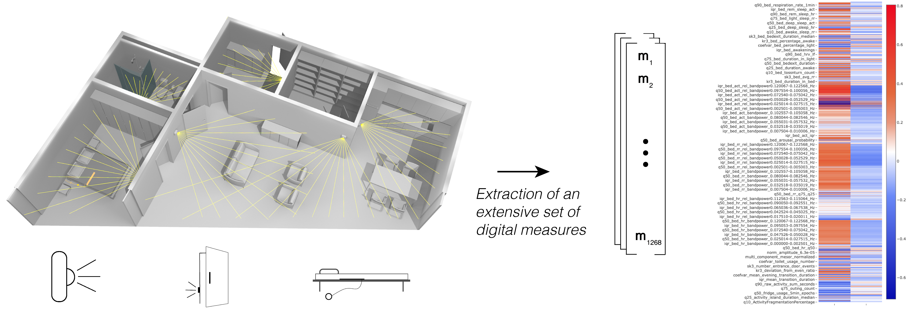
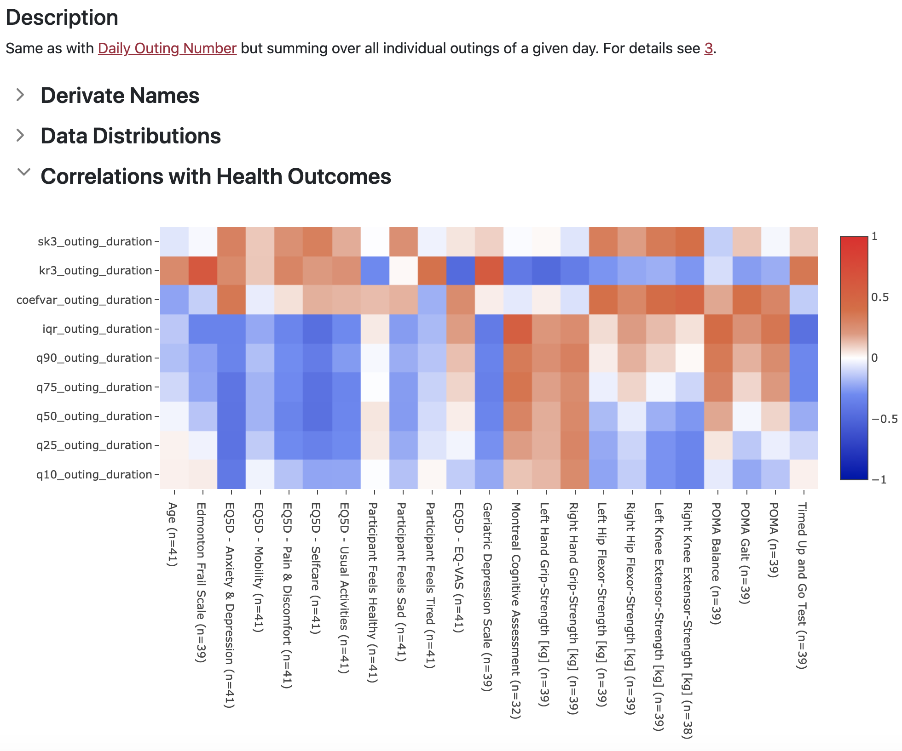

An Unobtrusive and Privacy-Preserving Digital Behaviorome
Introduction
This site describes a set of digital measures of health that can be extracted from passive
infrared (PIR) motion sensors, door sensors and a bed sensor.
It is meant as supplementary material to a scientific article, we show how these measures may be
helpful in determining
older adults' health states from passive and unobtrusive (thus requiring no participant
interaction and
privacy preserving) sensor data.
For each digital measure we give a summary, a short background and hypothesis and a description
of how to calculate it.
In total we describe 94 base measures, from which we further derive 1268 digital measures.
Base measures can be searched by name, derived measures must be searched by their
Measure ID.
In the navigation bar at the very top of the site, one may search for individual base measures
or measure IDs.
Moreover, the summary table (also in the navigation bar) may be used to sort and filter
individual measures by name, sensor type, measure category.
A more detailed Excel table may be downloaded HERE.
PLEASE NOTE: This content is under active development and the shown information is not yet
reflecting the final version.
Additional Data
To give the reader some idea of the presented digital measures in the real-world, we provide example data from our naturalistic cohorts of older community-dwelling adults. This data includes individual measure distributions of all derived measures, based on average values from two-week data segments. Additionally, we provide non-parametric Spearman rank correlation coefficients based with various ageing relevant health indicators and outcomes. Note that these are raw values based on the mean digital measures of each participant correlated against the average value of the respective health outcome. Correlations are currently not corrected for confunding variables, such as demographics (we will provide these in an update). All shown data is, again, based on data referred to in the original article. For further information about the participant characteristics, data collection settings and more, we refer to the To Be Published Soon.
Examples
What follows are two examples of behavioromes.
Please note that these are meant to be for illustrative
purposes.
More rigorous potential use cases for the introduced behaviorome can be found in the original
research article.
1. Cognitive State - Mild Cognitive Impairment vs Regular Older Adults
Here we show the full set of digital measures (n=1268), or a behaviorome if you will, comparing average values of older adults in the MCI range (based on Montreal Cognitive Assessment MoCA scores < 23) with regular older adults. Note that this data stems from two naturalistic samples of older adults with 16 out of 25 participants having MoCA scores below 23. The data was z-normalized before splitting into the two groups (to keep the distribution as representative as possible this includes all available participants, including those with missing MoCA scores. Subsequently, the mean values across participants and the pooled means of those across the two groups were calculated and visualized. It is important to note that this is primarily for demonstrative purposes, the sample size is too low to make any meaningful statements about differences between individual measures. In addition, some differences are likely due to covariates such as age.
2. Balance and Gait - Fall Risk in Older Adults
Here we show the same as in the previous example but with regards to balance and gait as measured by the Tinneti Performance Oriented Mobility Assessment (POMA). The POMA is often used to assess gait and balance in older adults and was shown to be a good indicator for falls in this population. We divide our data into two groups based on a cut-off of < 19 points, which corresponds to high fall risk. In this case, 10 out of 28 participants fell in the high fall-risk group. The processing was the same as described in the previous example.
Correlations with Health Indicators and Outcomes
As noted in the introduction, we provide Spearman rank correlation coefficients for each presented digital measure with a variety of health indicators and outcomes. These are based on the average of all bi-weekly segments of a given participant and the average of the respective indicator/ outcome. Below we detail all included health indicators and outcomes.
Example of Correlation Heatmap
Timed Up and Go Test
The timed up and go (TUG) test is a simple assessment often used to assess fall-risk in older adults. It is performed by measuring the time a person takes to stand up from a chair, walk 3m, turn, walk back to the chair, and eventually sit down again. Higher durations are indicative of mobility problems and heightened fall-risk.
Tinetti Performance Oriented Mobility Assessment
The performance oriented mobility assessment (POMA) is a test that aims to quantify an older adult's gait and balance abilities. The POMA consists of two parts, one concerning balance (POMA Balance) and one concerning gait (POMA Gait). During both parts, the subject is tasked to perform a set of actions, which are scored by an expert. Higher scores indicate better performance and correspond to a decreased fall-risk.
Knee Extensor Strength
Measure of left and right knee extensor strength (measured in kilograms). Lower values could indicate sarcopenia and increased fall-risk as well as decreased mobility.
Hip Flexor Strength
Measure of left and right hip flexor strength (measured in kilograms). Lower values could indicate sarcopenia and increased fall-risk as well as decreased mobility.
Handgrip Strength
Measure of left and right handgrip strength (measured in kilograms). Lower values could indicate sarcopenia and may be associated with problems in performing activities of daily living.
Montreal Cognitive Assessment
The Montreal cognitive assessment (MoCA) is a cognitive screening test, that can help to identify older adults that exhibit cognitive issues, such as mild cognitive impairment. Higher scores correspond to better cognitive abilities.
Geriatric Depression Scale
The geriatric depression scale (GDS) is a screening tool for late-life depression. Here the short 15-item version was used. Higher GDS scores are associated with occurrence of late-life depression.
EQ-5D-3L EQ-VAS
The EQ-VAS is a visual analog scale and part of the EuroQol EQ-5D, an instrument to assess health related quality of life. It asks subjects to rate their perceived health from 0-100. Higher values indicate better perceived health.
EQ-5D-3L Classes of Problem
In the descriptive 3 item class of problems version of the EQ-5D, subjects are asked to describe their level of difficulties/ problems in 5 different dimensions. Dimensions include: Usual Activities, Selfcare, Pain/ Discomfort, Mobility as well as Anxiety/ Depression. Across all dimensions, severity of 1 indicates no problems, while 2 means some problems and 3 severe problems.
Subjective Participant Feeling Status
These are three non-validated binary questions. The first asks whether a participant feels tired (yes/no), the second asks whether they feel sad (yes/no) and the third asks whether they feel healthy (yes/no).
Edmonton Frail Scale
The edmonton frail scale (EFS) is an assessment tool to measure an older adult's frailty level. It consists of questions as well as certain tasks. Higher EFS value are indicative of higher levels of frailty.
Sensors
Here the sensors used to derive the presented digital measures are presented.
It is important to note that the underlying sensor technology is minimally-obtrusive
(contactless, requires zero interaction and privacy respecting).
PIR Sensor
Passive infrared motion (PIR) sensors were placed in older adults' homes, covering the following rooms: entrance, kitchen, bathroom/toilet, living-room, bedroom.
Door Sensors
Magnetic door sensors were used on the entrance and fridge door.
Bed sensor
A pressure based bed sensor, placed under the mattress, was used to obtain sleep data.
Digital Measures
Activity Fragmentation
Summary
Activity fragmentation measures how fragmented a person's in-home activity is. Measured as probability.Background and Hypothesis
Activity fragmentation measures how fragmented a person's in-home activity is. The measure is inspired by the notion of sleep fragmentation, as for instance used in [1]. Broadly speaking, activity fragmentation is calculated as the probability $Pr(Inactive|Active)$ of transitioning from an active state to an inactive activity state in a state space model with the two states $Active$ and $Inactive$ - representing whether activity occurred in a certain time-epoch. The hypothesis here is that a person with highly continuous bouts of activity will have a lower transition probability, while one with highly irregular and rather erratic activities will have a higher transition probability. Conditions such as cognitive decline may lead to more fragmented activities as daily activities may be less planned for. On the other hand, problems with mobility or depression may lead to less fragmented activities as a person tries to actively minimize activities where possible.
Description
The activity fragmentation is calculated by computing non-overlapping 5 minute epochs from the PIR sensor activities signals. These epochs are then further transformed into states active (if any PIR sensor activation occurred in a given epoch) or inactive (if no PIR sensor activation occurred in a given epoch). Based on these states, the probability $Pr(Inactive|Active)$ of transitioning form an active to an inactive state is estimated. It should be noted, that missing values due to outing behavior is less problematic here as $Pr(Inactive|Active)$ does not factor in inactivity per-se but rather the state transitions. A detailed description is given in algorithm 1.
Measure IDs
- activity_fragmentation
- q10_ActivityFragmentationPercentage
- q25_ActivityFragmentationPercentage
- q50_ActivityFragmentationPercentage
- q75_ActivityFragmentationPercentage
- q90_ActivityFragmentationPercentage
- iqr_ActivityFragmentationPercentage
- coefvar_ActivityFragmentationPercentage
- kr3_ActivityFragmentationPercentage
- sk3_ActivityFragmentationPercentage
Data Distributions
Correlations with Health Outcomes
Cosinor Single Component Acrophase
Summary
The activity acrophase is a commonly calculated measure in chronobiology often derived from actigraphy data.Background and Hypothesis
The activity acrophase is a commonly calculated measure in chronobiology often derived from actigraphy data. It describes the phase shift angle of the activity peak on the basis of a fitted cosinusoidal curve with a - usually - 24h period [2]. In simpler terms, it describes the time of day when a person is most active. Acrophase has been described as being associated with a variety of health conditions, as for instance Alzheimer's disease and mood disorders [3, 4]. Since a large part of activity happens in-home in older adults, in-home activity can be a reasonable proxy of activity, even more so, if we are interested in activity patterns and not primarily the raw numbers (which may require calibration to be comparable across different apartments) [5, 6]. We therefore estimate cosinusoidal curve parameters based on PIR sensor in-home activity patterns.
Description
The single component trigonometric regression model used is given as \begin{equation}\label{eq:cosinor_single} y(t) = A_{1}~\sin\left(\dfrac{t}{24}~2\pi\right) + A_{2}~\cos\left(\dfrac{t}{24}~2\pi\right) + M + e(t), \end{equation} where $A_{1,2}$ and $M$ are model parameters to be learned and $e$ represents an error term, accounting for unexplained variation [7]. The best fit can be found by minimizing the residual sum of squares, as with regular linear regression. Following [7], the acrophase $\phi_a$ can be calculated as: \begin{equation*} \begin{aligned} \phi_a = {\left\{ \begin{array}{ll} - \arctan \left( \left| \frac{A_1}{A_2}\right| \right) &{} A_1> 0, A_2> 0,\\ - \pi + \arctan \left( \left| \frac{A_1}{A_2}\right| \right) &{} A_1> 0, A_2< 0,\\ - 2\pi + \arctan \left( \left| \frac{A_1}{A_2}\right| \right) &{} A_1< 0, A_2 > 0,\\ - \pi - \arctan \left( \left| \frac{A_1}{A_2}\right| \right) &{} A_1<0, A_2 < 0. \end{array}\right. } \end{aligned} \end{equation*} To calculate the activity acrophase from PIR sensor activity we first transform the raw PIR activity signals of each monitored day to non-overlapping hourly bins (we observed that lower time resolutions lead to more stochasticity). In a second step, this hourly activity data is used to fit the trigonometric function (Equation \eqref{eq:cosinor_single}), from which $\phi_a$ can be calculated. Hours that overlap with outings were imputed by their the respective temporal mean without outing, multiplied by 1.4. For the cosinor curve fitting, we used the python implementation CosinorPi [7].\\ Algorithm 2 describes the procedure use to arrive at all cosinor based parameters.
Measure IDs
- one_component_acrophase
Data Distributions
Correlations with Health Outcomes
Cosinor Multi Component Acrophase
Summary
Acrophase based on PIR activity, allowing multiple components in the Cosinor regression formulation. Measured as radians [rad].Background and Hypothesis
The multi component acrophase is basically the same as the single component one described in Cosinor Single Component Acrophase, except here the cosinor regression is composed of potentially multiple terms, allowing to fit more complex activity rhythms.
Description
Similar to its single component variant, the model used for curve fitting is defined as \begin{equation}\label{eq:multi_component_cosinor} y(t) = \sum^N_{i=1}\left(A_{i,1}~\sin\left(\dfrac{t}{24/i}~2\pi\right) + A_{i,2}~\cos\left(\dfrac{t}{24/i}~2\pi\right)\right) + M + e(t). \end{equation} The optimal number of components was chosen based on the extra sum-of-squares F-test, taking into account the increased degrees of freedom when adding more components [7]. We restricted $N \in \{1,...,6\}$, as more parameters would likely lead to overfitting behavior, given we estimate parameters on 10 days of PIR activity data. Calculating $\phi_a$ here is not analytically possible and has to be estimated from the fitted curve [7]. A detailed description is given in algorithm 2. As with the single component variant, we used the python implementation CosinorPy for multi-component curve fitting [7].
Measure IDs
- multi_component_acrophase
Data Distributions
Correlations with Health Outcomes
Cosinor Single Component Mesor
Summary
Rhythmicity adjusted activity mean based on a single component Cosinor model. Measured as PIR Activity [s].Background and Hypothesis
The activity mesor $M$ is a rhythmicity adjusted activity mean, obtainable by means of cosinor curve fitting. It can be seen as a measure of the overall activity, but is due to limited meaningfulness rarely used [8, 9]. There are limited studies that found lower mesor in depressed compared to healthy individuals [10]. Overall a higher value here refers to higher physical activity levels.
Description
The activity mesor $M$ in equation \eqref{eq:cosinor_single} is directly estimated by fitting the respective model. The procedure to arrive at the mesor is the same as for the other cosinor derived coefficients, see algorithm 2 for details.
Measure IDs
- one_component_mesor
- one_component_mesor_normalized
Data Distributions
Correlations with Health Outcomes
Cosinor Multi Component Mesor
Summary
Rhythmicity adjusted activity mean based on a a multi-component Cosinor model. Measured as PIR Activity [s].Background and Hypothesis
The activity mesor $M$ is a rhythmicity adjusted activity mean, obtainable by means of multi-component cosinor curve fitting. Compared to the single component variant in Cosinor Single Component Mesor, a multi-component model can better capture more complex activity cycles. . As with the single-component analog, here higher values refer to higher physical activity levels.
Description
As with the single component variant, the mesor $M$ in equation \eqref{eq:multi_component_cosinor} is directly estimated by fitting the respective model. The procedure to arrive at the mesor is the same as for the other cosinor derived parameters, see algorithm 2 for details.
Measure IDs
- multi_component_mesor
- multi_component_mesor_normalized
Data Distributions
Correlations with Health Outcomes
Cosinor Single Component Amplitude
Summary
Characterizes the strength or peakedness of a fitted single-component Cosinor regression model. Measured as PIR Activity [s].Background and Hypothesis
The activity amplitude is another parameter that can be estimated using cosinor analysis. It characterises the strength of the predictable activity rhythm. As with other cosinor parameters, we estimate it based on in-home PIR activity with the same justification elucidated in Cosinor Single Component Acrophase. Higher values here should be interpreted as a person having higher, more-pronounced activity rhythms.
Description
In the single component case, the amplitude $A = \sqrt{A_1^2 + A_2^2}$ can be analytically calculated from the fit cosinor model, described in equation \eqref{eq:cosinor_single} [7]. As described in [3], to alleviate the impact of activity level differences between people, we calculate in addition to the regular amplitude a normalized one. In the normalized case, the amplitude is divided by the sample standard deviation of the person's activity data. The whole procedure is described in algorithm 2.
Measure IDs
- one_component_amplitude
- one_component_amplitude_normalized
Data Distributions
Correlations with Health Outcomes
Cosinor Multi Component Amplitude
Summary
A measure of activity cycle strength based on a multi-component Cosinor regression model. Measured as PIR Activity [s].Background and Hypothesis
See Cosinor Single Component Acrophase for the basics. Compared to the single-component variant, the multi-component one is able to fit more complex activity curves and may thus lead to a more realistic estimate of the amplitude. Higher values here should be interpreted as a person having higher, more-pronounced activity rhythms.
Description
As with the multi-component acrophase Cosinor Multi Component Acrophase, the amplitude $A$ cannot be analytically calculated from the model (equation \eqref{eq:multi_component_cosinor}), but must be estimated from the fitted curve. The whole procedure is described in algorithm 2.
Measure IDs
- multi_component_amplitude
- multi_component_amplitude_normalized
Data Distributions
Correlations with Health Outcomes
Cosinor Number of Components
Summary
A potential measure of activity cycle complexity. Measured as number of model components.Background and Hypothesis
See Cosinor Single Component Acrophase for the basics. The number of components refers to the number of components used for the multi-component cosionor model. We hypothesize that this may be to some degree representative of the complexity of the underlying activity cycles. As such, higher number of components may indicate more complex behavior patterns.
Description
As described in Cosinor Multi Component Acrophase, the optimal number of components $N$ in Equation \eqref{eq:multi_component_cosinor}, is found using the extra sum-of-squares F-test to compare competing models, taking into account the increased degrees of freedom when adding more components [7]. We restricted the possible numbers of components to be between 1 and 6 components.
Measure IDs
- multi_component_n
Data Distributions
Correlations with Health Outcomes
Raw Fridge Usage
Summary
A measure of fridge usage frequency. Measured as number of fridge usages per day.Background and Hypothesis
This is a measure describing the number of times a person's fridge was opened throughout a predefined time interval. We hypothesize that it may give insights into a person's eating and potentially drinking behavior. For instance, it is likely that an older adult that uses the fridge more regularly is more independent and potentially less frail. This may also be indicative of certain conditions leading to reduced appetite.
Description
This is as simple as it sounds. We simply count the number of fridge opening events.
Measure IDs
- fridge_usage
- q10_fridge_usage
- q25_fridge_usage
- q50_fridge_usage
- q75_fridge_usage
- q90_fridge_usage
- iqr_fridge_usage
- coefvar_fridge_usage
- kr3_fridge_usage
- sk3_fridge_usage
Data Distributions
Correlations with Health Outcomes
Fridge Usage Epochs
Summary
A measure of fridge usage frequency. Measured as number of fridge usages per day.Background and Hypothesis
This is a simple measure similar to Raw Fridge Usage, describing the number of times a person's fridge was opened throughout a predefined time interval. However, as opposed to the raw version Raw Fridge Usage, we here calculate the opening based on 5 minute epochs, which may make the measure more generalizable. The rational for using fridge usage as a digital health measure is the same as in Raw Fridge Usage.
Description
Here we first partition the fridge door openings into a set of non-overlapping 5-minute epochs containing the number of fridge openings inside a given epoch. The usage frequency is then defined as the cardinality of the subset of epochs with openings, defined by indicator function $I_{open}(x) := \begin{cases} 1 &\text{if $x > 0$}\\ 0 &\text{otherwise} \end{cases}$, where $x$ is a scalar referring to the number of fridge openings.
Measure IDs
- fridge_usage_5min_epochs
- q10_fridge_usage_5min_epochs
- q25_fridge_usage_5min_epochs
- q50_fridge_usage_5min_epochs
- q75_fridge_usage_5min_epochs
- q90_fridge_usage_5min_epochs
- iqr_fridge_usage_5min_epochs
- coefvar_fridge_usage_5min_epochs
- kr3_fridge_usage_5min_epochs
- sk3_fridge_usage_5min_epochs
Data Distributions
Correlations with Health Outcomes
Daily Outing Number
Summary
A measure of outing frequency, thus how often a person leaves their home. Measured as number of outings per day.Background and Hypothesis
The outing number in a pre-defined time interval is a measure of how often a person leaves the apartment. Outing behavior may be related to physical activity levels and loneliness in older adults [11]. Both, of which are linked to a variety of conditions including risk of mortality and cognitive decline.\\ We calculate outings based on heuristics as opposed to the more complex method proposed in [11]. First of all, this does not require a ground-truth for training and should still be quite reliable given the door sensors are reliable - which we found to generally be the case with modern sensors (at least the ones we used).
Description
As a first step, we create a list of potential outing intervals by segmenting time based on door-opening and closing pairs as for instance described in [12]. The rational here is that outings should occur between two entrance open/close event pairs. In a next step, data from all other sensors in a given apartment that clearly indicate the presence of a person (such as bed sensor or fridge sensor) are mapped to the previously extracted intervals. If any sensor event falls into a potential outing interval it is discarded. After this, PIR motion data is extracted and mapped to the remaining outing intervals. In a last step, all potential outing intervals with more than $4$ seconds of total PIR motion activity are removed - we found this threshold reasonable to deal with spurious PIR sensor activations that can occur from time to time. As a post-processing step, we discarded all outings values of days where practically ($\leq 5$ seconds) no PIR motion and no outing was detected at the same time (likely indicating sensor failure). For details see 3.
Measure IDs
- outing_count
- q10_outing_count
- q25_outing_count
- q50_outing_count
- q75_outing_count
- q90_outing_count
- iqr_outing_count
- coefvar_outing_count
- kr3_outing_count
- sk3_outing_count
Data Distributions
Correlations with Health Outcomes
Daily Total Outing Duration
Summary
A measure of daily outing duration, thus how much time person spends outside the home. Measured as duration [s].Background and Hypothesis
The background here is the same as in Daily Outing Number. The difference is that here we measure the total time spent outside the home.
Description
Same as with Daily Outing Number but summing over all individual outings of a given day. For details see 3.
Measure IDs
- outing_duration
- q10_outing_duration
- q25_outing_duration
- q50_outing_duration
- q75_outing_duration
- q90_outing_duration
- iqr_outing_duration
- coefvar_outing_duration
- kr3_outing_duration
- sk3_outing_duration
Data Distributions
Correlations with Health Outcomes
Daily Visit Score
Summary
A measure capturing the likelihood of a person receiving visits. Measured as a score, representing weighted visit seconds.Background and Hypothesis
Home visits likely constitute an important part of social interaction in older adults. One would thus assume that higher visit scores would be indicative of more social interaction, less loneliness and potentially a reduced probability of having or developing associated conditions like late-life depression \cite{visit}.
Description
The daily visit score is calculated on the basis of a trained visit-detection algorithm introduced in \cite{visit}. Briefly, the PIR sensor events are segmented into non-overlapping segments based on door entrance opening-closing pairs, same as used for the outing detection Daily Outing Number. Subsequently a set of features is calculated based on the PIR sensor events and used in a self-training based domain adaptation algorithm to predict the probability of each segment being a visit or non-visit segment. The visit score for a given day is then given by the sum of individual segment scores $VS_i$ segments within a day. The segment scores $VS_i$ are defined as $VS_i = w_i \cdot |T_i|$, where $w_i$ refers to the prediction made by the trained visit-detection algorithm and $|T_i|$ represents the duration of a given segment. For more details see \cite{visit}.
Measure IDs
- visit_score
- q10_visit_score
- q25_visit_score
- q50_visit_score
- q75_visit_score
- q90_visit_score
- iqr_visit_score
- coefvar_visit_score
- kr3_visit_score
- sk3_visit_score
Data Distributions
Correlations with Health Outcomes
Daily Number of Entrance Door Events
Summary
A measure of how often the entrance door has been opened and closed for a given day. Measured as number of entrance doors usages per day.Background and Hypothesis
Likely related to the outing number Daily Outing Number but more basic. The number of entrance door openings should reflect both home visits and outings. It may thus capture some relation to loneliness but is likely less specific as the Daily Visit Score or Daily Outing Number.
Description
Simply the total number of all door events (opening and closing) of entrance doors that occurred throughout a day.
Measure IDs
- number_entrance_door_events
- q10_number_entrance_door_events
- q25_number_entrance_door_events
- q50_number_entrance_door_events
- q75_number_entrance_door_events
- q90_number_entrance_door_events
- iqr_number_entrance_door_events
- coefvar_number_entrance_door_events
- kr3_number_entrance_door_events
- sk3_number_entrance_door_events
Data Distributions
Correlations with Health Outcomes
Daily Time of Day Entrance Door
Summary
Time of day of first, middle and last occurrence of entrance door events for a given day. Measured as minutes since midnight [min].Background and Hypothesis
The time of day of specific events may measure certain behavioral tendencies and consistencies related to entrance door usage. The idea of using first, middle and last time of day occurrence of events has been used by Chen et al. [13].
Description
Time of day of the first, middle and last entrance door event of a given day is simply calculated as the time of occurrence of a specific event converted to minutes since midnight (based on local time).
Measure IDs
- entrance_door_tod_first
- q50_entrance_door_tod_first
- iqr_entrance_door_tod_first
- entrance_door_tod_last
- q50_entrance_door_tod_last
- iqr_entrance_door_tod_last
- entrance_door_tod_middle
- q50_entrance_door_tod_middle
- iqr_entrance_door_tod_middle
Data Distributions
Correlations with Health Outcomes
Daily Time of Day Fridge Door
Summary
Time of day of first, middle and last occurrence of fridge door events for a given day. Measured as minutes since midnight [min].Background and Hypothesis
Same as in Daily Time of Day Entrance Door but based on fridge door events. In this context, these measures may reflect upon eating behavior.
Description
Time of day of the first, middle and last fridge door event of a given day is simply calculated as the time of occurrence of a specific event converted to minutes since midnight (based on local time).
Measure IDs
- fridge_door_tod_first
- q50_fridge_door_tod_first
- iqr_fridge_door_tod_first
- fridge_door_tod_last
- q50_fridge_door_tod_last
- iqr_fridge_door_tod_last
- fridge_door_tod_middle
- q50_fridge_door_tod_middle
- iqr_fridge_door_tod_middle
Data Distributions
Correlations with Health Outcomes
Daily Bathroom Usage Number
Summary
Contactless approximation of daily toilet usage. Measured as number of bathroom usage periods per day.Background and Hypothesis
The idea here is to use PIR motion activity in the bathroom as an approximation for toilet usage. Toilet usage is not only related to specific conditions like urinary tract infections or congestive heart failure but could also be linked to cognitive function [14]. As such, unusually high or low values may be indicative of underlying health issues.
Description
While we cannot directly measure toilet usage with PIR sensors, we can approximate it using PIR activity in the bathroom. To do so, we calculate a set of non-overlapping 15-minute windows. Toilet usage can then be defined as the cardinality of the subset $\mathcal{T}_{active}$ of windows where PIR activity in the bathroom is greater than zero. This subset is defined by the indicator function $I_{\mathcal{T}_{active}}(\mathbf{x}) := \begin{cases} 1 &\text{if $sum(\mathbf{x}) > 0$}\\ 0 &\text{otherwise} \end{cases}$, where $\mathbf{x}$ is a vector of PIR activity recordings in the bathroom for a given 15-minute window. To exclude days where a person was rarely at home or technical issues occurred, only days with a minimum total PIR activity of at least 300 seconds were included (similar to all other PIR based measures). To account for outings, intervals with outings were imputed by the rounded temporal average toilet usage occurrences when the person was at home. Imputation and filtering is the same as with other PIR based measures, see for instance algorithm 4.
Measure IDs
- toilet_usage_number
- q10_toilet_usage_number
- q25_toilet_usage_number
- q50_toilet_usage_number
- q75_toilet_usage_number
- q90_toilet_usage_number
- iqr_toilet_usage_number
- coefvar_toilet_usage_number
- kr3_toilet_usage_number
- sk3_toilet_usage_number
Data Distributions
Correlations with Health Outcomes
Bathroom Usage Time of Day
Summary
Contactless approximation of the time of day of first, middle and last toilet usage events. Measured as minutes since midnight [min].Background and Hypothesis
Time of day of toilet usage events could measure certain aspects of toileting behavior that may be associated with cognitive processes or other urinary as well as self-care related conditions.
Description
A PIR based approximation of toilet usage is calculated as described in Daily Bathroom Usage Number. Using the subset $\mathcal{T}_{active}$ of windows with PIR activity in the bathroom, the time of occurrence of the first, middle and last event is calculated as the number of minutes after midnight (based on local time).
Measure IDs
- toilet_usage_tod_first
- q50_toilet_usage_tod_first
- iqr_toilet_usage_tod_first
- toilet_usage_tod_last
- q50_toilet_usage_tod_last
- iqr_toilet_usage_tod_last
- toilet_usage_tod_middle
- q50_toilet_usage_tod_middle
- iqr_toilet_usage_tod_middle
Data Distributions
Correlations with Health Outcomes
Intradaily Variability
Summary
Contactless approximation of intradaily variability.Background and Hypothesis
IV is a measure of how fragmented daily activity patterns are [15], where higher IV values indicate more fragmentation. It is a non-parametric measure often used with actigraphy data to analyse aspects of circadian rhythmicity in free-living conditions. Studies have for instance shown that IV may be indicative of sleep-wake cycle disturbances [15]. In addition, there is research showing that higher IV values are linked to an increased risk of Alzheimer's dementia [3, 15].
Description
IV is a measure of how fragmented daily activity patterns are. We calculated it as described in [3] but based on PIR sensor activity, instead of actigraphy counts $$ IV = \dfrac{n\sum_{i=2}^n(x_i-x_{i-1})^2}{(n-1)\sum_{i=1}^n(x_i-\bar{x})^2}, $$ where $x_i$ is the sum of hourly PIR activity and $\bar{x}$ is the sample mean of $x_i$ over all hourly samples $n$. Activity for hours with outings were replaced with the temporal average of the same hour when the person was at home, multiplied by a factor of 1.4. Additionally, data from days with less than 300 seconds of total PIR activity, were removed. The last two steps are comparable to what is described in algorithm 5.
Measure IDs
- intradaily_variability
Data Distributions
Correlations with Health Outcomes
Intradaily Stability
Summary
Contactless approximation of intradaily stability.Background and Hypothesis
IS is a measure of the robustness of daily (24h) activity rhythm [3, 15]. It is a non-parametric measure often used with actigraphy data, where high IS values are indicative of good synchronization of the zeitgeber's 24 h cycle [15]. It was shown that IS has a direct relationship with quality of life measures [15]. Research also shows relationships with the MMSE [15], a common questionnaire based measure for cognitive impairment, and that decreased IS is associated with an increased Alzheimer's dementia risk [3].
Description
IS is calculated based on a description in [3] as follows $$ IS = \dfrac{n\sum_{h=1}^{24}(\bar{x}_h - \bar{x})^2}{24\sum_{i=1}^n(x_i - \bar{x})^2}, $$ where $x_i$ is the sum of hourly PIR activity, $\bar{x}$ is the sample mean of $x_i$ over all hourly samples $n$ and $\bar{x}_h$ is the sample mean of activity across that specific hour of the day across all samples. Activity for hours with outings were replaced with the temporal average of the same hour when the person was at home, multiplied by a factor of 1.4. Additionally, data from days with less than 300 seconds of total PIR activity, were removed. The last two steps are comparable to what is described in algorithm 5.
Measure IDs
- intradaily_stability
Data Distributions
Correlations with Health Outcomes
Spectral Entropy of Activity
Summary
Contactless measure of activity signal complexity. Measured as Shannon entropy [nats].Background and Hypothesis
The SE of the activity signal can be viewed as a measure of complexity. Literature suggests that complexity (or inversely the lack of regularity) may be an adequate measure to quantify cognitive decline in older adults [16, 17, 13]. Higher SE values indicate higher signal complexity.
Description
In a first step, total PIR activity is binned (or resampled) into $N$ 1h periods $\mathbf{x}$. Subsequently, hours with outings are imputed by the temporal mean of the same hour when the person was at home, multiplied by a factor of 1.4, as with other PIR activity measures (see for instance Raw Activity). In a next step, the DFT $\mathbf{X} = \mathcal{F}(\mathbf{x})$ is calculated. Then, the power spectral density of the transformed signal $\mathbf{X}$ is calculated and normalized $\hat{\mathbf{X}} = \dfrac{PSD(\mathbf{X})}{\sum PSD(\mathbf{X})}$, where the $PSD$ of the transform is calculated as \begin{equation}\label{eq:PSD} PSD(\mathbf{X}) = \dfrac{1}{N}|\mathbf{X}|^2. \end{equation} Eventually, the SE is calculated as \begin{equation}\label{eq:spectral_entropy} SE = -\sum_{i=0}^{N-1} \hat{X}_i \log \hat{X}_i. \end{equation}
Measure IDs
- spectral_entropy
Data Distributions
Correlations with Health Outcomes
LF-HF Power Ratio
Summary
Contactless measure of activity complexity. Measured as the ratio of low and high-frequency bands of the raw PIR sensor activity signal.Background and Hypothesis
The power spectral density ratio (LFHF) based on the PIR activity signal is similar to Spectral Entropy of Activity in that we assume it may be a measure of behavioral complexity. The idea here is that people with regular behavior patterns will have higher relative power in lower frequency bands of the activity signal. On the contrary, non-periodic, erratic behaviour would more likely lead to higher relative power in the higher frequency bands. As a result, we would assume that larger LFHF values would indicate more regular behavior. The reasoning for attempting to quantify regularity in the signal is given in Spectral Entropy of Activity.
Description
In a first step, total PIR activity is binned (or resampled) into $N$ 1h periods $\mathbf{x}$. Subsequently, hours with outings are imputed by the temporal mean of the same hour when the person was at home, multiplied by a factor of 1.4, as with other PIR activity measures (see for instance Raw Activity). In a next step, the DFT $\mathbf{X} = \mathcal{F}(\mathbf{x})$ is calculated. Then, the power spectral density $\bar{\mathbf{X}} = PSD(\mathbf{X})$ of the transformed signal $\mathbf{X}$ is calculated using equation~\eqref{eq:PSD}. For the calculation of the SE, only positive frequency bins $\{\frac{1}{2}N+1, ..., N\}$ are considered with the low frequencies in the first half $\{\frac{1}{2}N, ..., \frac{3}{4}N\}$ and high frequencies in the second half $\{\frac{3}{4}N, ..., N\}$. Finally, LFHF is calculated as $$ LFHF = \dfrac{\sum_{i=N/2+1}^{N-N/4} \bar{X}_i}{\sum_{i=N-N/4+1}^{N} \bar{X}_i}. $$ where the frequency band is split in two evenly parts, for the low low and high frequencies, respectively. For simplicity, only positive frequencies are considered in the calculation.
Measure IDs
- lfhf
Data Distributions
Correlations with Health Outcomes
Wavelet Variance
Summary
Contactless approximation of activity variance across different timescales. Measured as normalized variance.Background and Hypothesis
Wavelet variance (WV) can be seen as a measure of variation in activity across different frequency scales. The basic assumption here is that the variance at a certain timescale may reflect upon the consistency of patterns at that scale. Higher WV values at a given timescale would thus rather indicate less predictable and more erratic behavior, as such WV tries to capture a similar relation as SE (Spectral Entropy of Activity) or LFHF (LF-HF Power Ratio). Using wavelet variance in this context was introduced by Hayes et al. [17], where they demonstrated that PIR based WV was higher in a MCI group, compared to the healthy control group. Higher wavelet variance in a certain frequency band could be interpreted as more complex or variable behavior and less ordered behavior across the respective frequencies.
Description
We calculate WV based on the description given in [17] extended with our own pre-processing steps. First, we resample the activity signal into 11.25 minute bins. Subsequently we impute bins where outings occurred with the average activity of the same bin time of day without outing multiplied by a factor of 1.4 to account for higher activity outside the home (similar to how other PIR activity signals were handled, see for instance Raw Activity. Eventually we apply a energy normalized SWT [18] to the signal and extract the detail coefficients at the following timescales: 45min - 1.5h, 1.5h - 3h, 3h - 6h, 6h - 12h, 12h - 24h. We should note that in the original description, it was not exactly specified whether the detail coefficients were calculated using regular discrete wavelet transform or stationary wavelet transform (or some related variant thereof [19]). However, to get a meaningful estimate of wavelet variance the decimation of coefficients at each filtering step would lead to very short sequences, where edge effects are dominant, so we simply assume it was based on a non-decimated variant like SWT. For the SWT we use a coif5 wavelet function, as in [17]. Based on the normalized detail coefficients we then calculate the variance of each coefficient sequence to obtain the final variance estimates. For the SWT calculations we used the PyWavelets implementation [20].
Measure IDs
- wavelet_variance_1.5h
- wavelet_variance_12h
- wavelet_variance_24h
- wavelet_variance_3h
- wavelet_variance_6h
Data Distributions
Correlations with Health Outcomes
Normalized Activity Bandpowers
Summary
Contactless approximation of activity signal bandpower in specific frequency bands. Measured as power spectral density $V^2/Hz$ and normalized power spectral density.Background and Hypothesis
The normalized PIR-activity bandpowers (PIR-BP) represent relative power in specific, evenly spaced frequency bands. Here the hypothesis is broad, as specific frequency bands may represent a variety of behaviors that may or may not be related to cognitive decline or a variety of other health indicators and outcomes.
Description
We start out similarly as in LF-HF Power Ratio. In a first step, total PIR activity is binned (or resampled) into $N$ 1h periods $\mathbf{x}$. Subsequently, hours with outings are imputed by the temporal mean of the same hour when the person was at home, multiplied by a factor of 1.4, as with other PIR activity measures (see for instance Raw Activity). In a next step, the DFT $\mathbf{X} = \mathcal{F}(\mathbf{x})$ is calculated. Then, the power spectral density $\bar{\mathbf{X}} = PSD(\mathbf{X})$ of the transformed signal $\mathbf{X}$ is calculated using equation \eqref{eq:PSD}. Now, the positive frequencies $N/2:N-1$ are split into 20 evenly sized frequency bins $X^b_k \forall k \in [1, 20]$, ranging from 0 Hz to 0.00028 Hz (approximately 2h frequency). Each bin is then normalized by the total power across all bins, thus $\dfrac{X^b_k}{\sum_{i=0}^{20} X^b_i}$. Note that with this approach we discard shorter activity cycles, however, we think that those would hardly be comparable across subjects based on the already difficult to compare PIR signal and thus, at least for inter-subject comparison, would be less useful. Furthermore it should be mentioned that while we did not see strongly different values, the power spectral density may also be calculated using Welch's [21] method and made more comparable to other approaches by numerically integrating between PSD points. However, as we did not see any larger differences between the more complicated and the presented simple approach, we use the simpler variant described above as that should be more intuitive to understand and potentially replicate.
Measure IDs
- norm_amplitude_0.000103
- norm_amplitude_0.000109
- norm_amplitude_0.000116
- norm_amplitude_0.000122
- norm_amplitude_0.000129
- norm_amplitude_1.7e-05
- norm_amplitude_1e-05
- norm_amplitude_2.3e-05
- norm_amplitude_3.6e-05
- norm_amplitude_3e-05
- norm_amplitude_3e-06
- norm_amplitude_4.3e-05
- norm_amplitude_5.6e-05
- norm_amplitude_5e-05
- norm_amplitude_6.3e-05
- norm_amplitude_6.9e-05
- norm_amplitude_7.6e-05
- norm_amplitude_8.3e-05
- norm_amplitude_8.9e-05
- norm_amplitude_9.6e-05
Data Distributions
Correlations with Health Outcomes
Fridge Usage Entropy
Summary
Shannon entropy measure of fridge usage, indicating uniformity of usage across the day. Measured as Shannon entropy [nats].Background and Hypothesis
FE tries to capture how even fridge usage is distributed across the day. We hypothesize that especially people with cognitive problems, like those with Alzheimer's dementia, would tend to use the fridge more evenly throughout the day leading to less clustered usage around specific times like local lunch or dinner times. Higher FE values indicate more uniformly distributed usage.
Description
We calculate this measure by first counting fridge events for each hour of the day, giving us a vector $\mathbf{c} = [n_0, n_1, ..., n_{22}, n_{23}]$ where each component $n_h$ represents the count of fridge events for a given hour of the day $h$. Next we simply normalize the hourly counts to sum to $1$, thus $\mathbf{\hat{c}} = \dfrac{\mathbf{c}}{\sum_{i=0}^{23} c_i}$. Lastly, FE is calculated based on classic Shannon entropy formulation $$ FE = -\sum_{i=0}^{23} \hat{c}_i \log \hat{c}_i $$ Here we exclude days that have less than 300 seconds of total PIR activation as with other estimates to exclude days with sensor issues or unusually long outings.
Measure IDs
- entropy_fridge
Data Distributions
Correlations with Health Outcomes
Entrance Door Entropy
Summary
Shannon entropy measure of entrance door usage, indicating uniformity of usage across the day. Measured as Shannon entropy [nats].Background and Hypothesis
Same as in Fridge Usage Entropy but based on entrance door usage.
Description
Same as in Fridge Usage Entropy but based on entrance door events (openings/closings).
Measure IDs
- entropy_entrance
Data Distributions
Correlations with Health Outcomes
PIR Activity Entropy
Summary
Shannon entropy measure of hourly PIR activity, indicating uniformity of activity across the day. Measured as Shannon entropy [nats].Background and Hypothesis
Same as in Fridge Usage Entropy and Entrance Door Entropy but on the basis of hourly PIR activity bins.
Description
Overall the calculation is the same as in Fridge Usage Entropy, with the exception of the raw PIR activity signal pre-processing. Here we first calculate hourly resampled activity bins and impute outings as with other PIR activity estimates (see Raw Activity). Based on those a vector containing the average activity levels per-hour of the day are calculated. After that the steps described in Fridge Usage Entropy are carried out, namely, the activity vector is normalized and Shannon entropy is calculated.
Measure IDs
- total_entropy
Data Distributions
Correlations with Health Outcomes
Eigenbehavior Reconstruction Error
Summary
An eigendecomposition based measure of behavioral complexity. Measured as normalized error between input and reconstruction.Background and Hypothesis
The ERE is attempting to calculate behavioral complexity of subjects based on PIR sensor derived location data. As with other measures of behavioral complexity like (Spectral Entropy of Activity or LF-HF Power Ratio) the hypothesis is that cognitive decline may be measurable be exhibited behavioral complexity, thus how chaotic or irregular a person behaves in their daily lives, as for instance shown in [17, 16]. We introduced this measure in REF TO ANGELA and showed that higher ERE values are associated lower MoCA scores. In general we would assume that ERE values indicate less structured behavior.
Description
The approach is described in detail in REF TO ANGELA, here we give a brief overview. First a location matrix based on PIR sensor measurements $\mathbf{L} \in \mathbb{R}^{d \times 24|\mathcal{R}|}$ is calculated, where $d$ represents the number of days worth of location data and $\mathcal{R} \in \{kitchen, livingroom, toilet, bedroom, entrance, outside\}$ refers to the set of included locations. The row entries in $\mathbf{L}$ correspond to concatenated location vectors for each room, where for each hour of the day the percentage of room occupancy is encoded. Subsequently the centered location matrix $\hat{\mathbf{L}}$ is calculated from $\mathbf{L}$, which is then used to calculate the covariance matrix $\mathbf{\Sigma} = \hat{\mathbf{L}}(\hat{\mathbf{L}})^T$. Next, $\mathbf{\Sigma}$ is decomposed into a set of Eigenvalues and Eigenvectors using eigendecomposition. Based on the 7 Eigenvectors corresponding to the seven largest Eigenvalues, matrix $\bar{\mathbf{L}}$ is reconstructed. Eventually, the ERE is calculated as the mean sum of absolute differences between $\hat{\mathbf{L}}$ and $\bar{\mathbf{L}}$ $$ ERE = \dfrac{1}{24d|\mathcal{R}|}\sum_{i=1}^d\sum_{j=1}^{24|\mathcal{R}|} \mathbf{D}_{i,j},~\mathbf{D} = |\mathbf{\hat{L}} - \mathbf{\bar{L}}|. $$
Measure IDs
- pir_reconstruction_error
Data Distributions
Correlations with Health Outcomes
Activity Island Number
Summary
A contactless approximation of the number of physical activity bouts. Measured as number of activity islands per dayBackground and Hypothesis
Islands of a measure can be thought of as continuous bursts or bouts of a certain activity and have been used as digital measures of health in [13]. In the context of physical activity, activity islands are conceptually similar to activity bouts as commonly extracted from accelerometer data in physical activity research (see for instance [22]). While PIR based activity islands are certainly not as accurate as accelerometer based ones, they likely still give some estimate on continuous physical activity occurrences. We assume that, compared to individual short PIR sensor activations, activity islands are more probable to capture moderate to vigorous physical activity levels and may thus give an different perspective compared to raw PIR based activity levels (Raw Activity).\\ Physical activity in general, but especially higher levels thereof, is associated with a wider range of ageing relevant adverse health outcomes, including Alzheimer's disease, late-life depression, increased fall risk and all-cause mortality - to name a few.
Description
To calculate activity islands, we first low-pass filter the raw PIR activity signal with a simple moving average filter and a window size of 2.5 seconds. Subsequently, all continuous activity stretches or "islands" are extracted. This means intervals where the filtered activity is consistently greater than 0 and the duration is at least 10 minutes. A more detailed description is given in algorithm 6.
Measure IDs
- activity_island_count
- q10_activity_island_count
- q25_activity_island_count
- q50_activity_island_count
- q75_activity_island_count
- q90_activity_island_count
- iqr_activity_island_count
- coefvar_activity_island_count
- kr3_activity_island_count
- sk3_activity_island_count
Data Distributions
Correlations with Health Outcomes
Activity Island Duration
Summary
A contactless approximation of the median length of physical activity bouts. Measured as duration [s].Background and Hypothesis
This is the same as Activity Island Number but considering the median island duration instead of the count. We would assume that longer median activity bouts are indicative of higher overall fitness levels and comes with similar but potentially stronger associations with a multitude of health indicators and outcomes. However, literature is inconclusive on the importance of bout duration, with more recent work showing that it may not be as important [23].
Description
Activity island duration is calculated with the same procedure as activity island number Activity Island Number. Instead of counting the number of islands, we calculate the median duration of activity islands over a daily period.
Measure IDs
- activity_island_duration
- q10_activity_island_duration_median
- q25_activity_island_duration_median
- q50_activity_island_duration_median
- q75_activity_island_duration_median
- q90_activity_island_duration_median
- iqr_activity_island_duration_median
- coefvar_activity_island_duration_median
- kr3_activity_island_duration_median
- sk3_activity_island_duration_median
Data Distributions
Correlations with Health Outcomes
Activity Counts
Summary
A contactless approximation of the number of physical activity epochs. Measured as number of activity epochs per dayBackground and Hypothesis
Another PIR motion based measure of in-home physical activity. The rational and hypothesis here is the same as in Raw Activity. The difference is in the way activity is calculated. Here, activity is based on the number of 5 minute epochs that have at least one sensor activation. It is thus less precise but potentially more comparable between apartments - without calibration.
Description
PIR based activity counts are calculated by first partitioning the raw activity signals into a set of non-overlapping 5-minute epochs. The count is then given by the cardinality of the $active$ subset of epochs defined by the indicator function $I_{active}(\mathbf{x}) := \begin{cases} 1 &\text{if $sum(\mathbf{x}) > 0$}\\ 0 &\text{otherwise} \end{cases}$, where $\mathbf{x}$ is a vector containing the raw activities of a given 5 minute epoch. Similar to other PIR based activity estimates, we impute outing intervals with the respective temporal mean of the same time period without outing, multiplied by a factor of 1.4 to account for higher activity outside the home [6]. Days with unusually low activity (< 300 seconds) were excluded.
Measure IDs
- activity_counts
- q10_activity_counts_5min_epochs
- q25_activity_counts_5min_epochs
- q50_activity_counts_5min_epochs
- q75_activity_counts_5min_epochs
- q90_activity_counts_5min_epochs
- iqr_activity_counts_5min_epochs
- coefvar_activity_counts_5min_epochs
- kr3_activity_counts_5min_epochs
- sk3_activity_counts_5min_epochs
Data Distributions
Correlations with Health Outcomes
Raw Activity
Summary
A contactless approximation of physical activity. Measured as PIR activity duration [s].Background and Hypothesis
Passive infrared motion sensors might be used to approximately quantify in-home physical activity. One can thus interpret higher values as being associated with higher physical activity levels. In community-dwelling older adults, that spend a significant amount of time in their homes, this activity may be associated with overall physical activity, as we showed in a small cohort of older adults with the same apartment layout and sensor placement [5]. We additionally showed that this value can be improved upon by imputing time spent outside the home with the temporal average of the same time interval across all monitored days, multiplied by a factor of approximately $1.4$ [6]. It should be noted, that the comparability of this measure between different apartments may be limited due to different apartment layouts and sensor placements, as well as a different number of sensors. To improve comparability, a calibration of PIR sensor systems may be employed if 7-14 days of accelerometer data is available [6].
Description
We calculated total raw activity by summing over all PIR sensor firing durations for a given day. Days with extremely little in-home activity (< 300 seconds) were excluded as they are likely the result of sensor issues or long outings. To reduce the effect of regular, short-term outings, we imputed activity during those outings with the temporal mean of these time intervals when the person was at home and multiplied this activity by a constant of 1.4 to account for the higher activity usually exerted during outings - for a justification see [6]. A detailed description is given in Algorithm 5.
Measure IDs
- raw_activity_sum_seconds
- q10_raw_activity_sum_seconds
- q25_raw_activity_sum_seconds
- q50_raw_activity_sum_seconds
- q75_raw_activity_sum_seconds
- q90_raw_activity_sum_seconds
- iqr_raw_activity_sum_seconds
- coefvar_raw_activity_sum_seconds
- kr3_raw_activity_sum_seconds
- sk3_raw_activity_sum_seconds
Data Distributions
Correlations with Health Outcomes
Daily Room-Transition Counts
Summary
A robust contactless approximation of physical activity. Measured as the number of room-transitions per day.Background and Hypothesis
This measure describes the number of times a person transitions between PIR sensor equipped rooms of an apartment. It can be seen as another, potentially more robust, way to quantify in-home physical activity [5, 24]. In general it is plausible to assume that room-transitions of a certain type can be more comparable between subjects (compared to raw PIR based activity, without calibration), as it is less dependent on sensor positioning and apartment layout [5]. We found this parameter to be associated with a variety of ageing relevant health-indicators and outcomes, at least in people sharing the same apartment layout [5]. Work from Campbell et al. showed that room-transitions may be sensitive to health-status changes [24].
Description
The number of room-transitions is based on any transition (direct or indirect) between rooms that meets certain transition-time conditions: > 10 seconds and < 20 seconds. Formally, the number of transitions is the cardinality of the subset $\mathcal{R}_t$ of room-transition durations defined by the indicator function\\ $I_{\mathcal{R}_t}(x) := \begin{cases} 1 &\text{if $x > 10 \wedge x < 20$}\\ 0 &\text{otherwise} \end{cases}$, where $x$ refers to a transition between any pair of rooms.\\ A transition duration is defined by $\Delta t$ between the first and last PIR firing times of two sensors in distinct rooms. To account for outings, we impute outing intervals by the expected count over the same interval when the person was at home. While the duration constraint may seem a bit arbitrary, we found it to lead to more stable results. This is probably a result of excluding very short and potentially spurious transitions that are very much dependent on a specific room layout where a sensor may be triggered from another room. In addition, removing longer transitions makes sense as they do not represent a continuous motion but are the result of interwoven activities of daily living. For details see algorithm 4.
Measure IDs
- transition_count
- q10_transition_count
- q25_transition_count
- q50_transition_count
- q75_transition_count
- q90_transition_count
- iqr_transition_count
- coefvar_transition_count
- kr3_transition_count
- sk3_transition_count
Data Distributions
Correlations with Health Outcomes
Daily Mean Room-Transition Duration
Summary
A contactless approximation of gait-speed. Measured as duration [s].Background and Hypothesis
Similar to Daily Room-Transition Counts, however, here the duration between room-transitions is of interest. We assume that transition-duration could be used as an approximation of gait-speed [25, 26] an important parameter related to fall risk but also Alzheimer's disease [17, 27]. However, without calibration, such as for instance shown in by Rana et al. [28], a PIR based approximation based on room-transitions may not generalize well beyond a single individual and could thus be of limited use for inter-subject comparisons.
Description
Same as in Daily Room-Transition Counts, just that we are interested in the mean transition-duration $\bar{\mathcal{R}_t}$ of transition duration subset $\mathcal{R}_t$. For details see algorithm 4.
Measure IDs
- mean_transition_duration
- q10_mean_transition_duration
- q25_mean_transition_duration
- q50_mean_transition_duration
- q75_mean_transition_duration
- q90_mean_transition_duration
- iqr_mean_transition_duration
- coefvar_mean_transition_duration
- kr3_mean_transition_duration
- sk3_mean_transition_duration
Data Distributions
Correlations with Health Outcomes
Daily Mean Room-Transition Duration Morning
Summary
A contactless approximation of gait-speed in the morning. Measured as duration [s].Background and Hypothesis
Same as Daily Mean Room-Transition Duration but with the restriction on morning hours (between 5:00 - 12:00). The rational here is that there is limited evidence [17] that gait-speed may be different at different times of the day, which seems to have some association with MCI.
Description
Same as Daily Mean Room-Transition Duration with the additional constraint that the transition event must fall in the time interval between 5:00 and 12:00.
Measure IDs
- mean_morning_transition_duration
- q10_mean_morning_transition_duration
- q25_mean_morning_transition_duration
- q50_mean_morning_transition_duration
- q75_mean_morning_transition_duration
- q90_mean_morning_transition_duration
- iqr_mean_morning_transition_duration
- coefvar_mean_morning_transition_duration
- kr3_mean_morning_transition_duration
- sk3_mean_morning_transition_duration
Data Distributions
Correlations with Health Outcomes
Daily Mean Room-Transition Duration Evening
Summary
A contactless approximation of gait-speed in the evening. Measured as duration [s].Background and Hypothesis
Same idea as in Daily Mean Room-Transition Duration Morning. Here the transitions are restricted to evening hours (17:00 - 23:00).
Description
Same as Daily Mean Room-Transition Duration with the additional constraint that the transition event must fall in the time interval between 5:00 and 12:00.
Measure IDs
- mean_evening_transition_duration
- q10_mean_evening_transition_duration
- q25_mean_evening_transition_duration
- q50_mean_evening_transition_duration
- q75_mean_evening_transition_duration
- q90_mean_evening_transition_duration
- iqr_mean_evening_transition_duration
- coefvar_mean_evening_transition_duration
- kr3_mean_evening_transition_duration
- sk3_mean_evening_transition_duration
Data Distributions
Correlations with Health Outcomes
Daily Mean Room-Transition Duration Ratio
Summary
A contactless approximation of the ratio of gait-speed in the morning vs evening. Measured as a ratio of morning and evening average room-transition durations.Background and Hypothesis
Same rational as in Daily Mean Room-Transition Duration Morning and Daily Mean Room-Transition Duration Evening. However, here the ratio between morning and evening gait-speed of a given day is calculated.
Description
The morning-evening gait-speed ratio is calculated by the ratio $\dfrac{\bar{\mathcal{R}}_t^{morning}}{\bar{\mathcal{R}}_t^{evening}}$, where the morning and evening refers to the transition-duration variants Daily Mean Room-Transition Duration Morning and Daily Mean Room-Transition Duration Evening, respectively. For a detailed description of the transition-duration measure see Daily Mean Room-Transition Duration and Daily Room-Transition Counts.
Measure IDs
- morning_evening_transition_ratio
- q10_morning_evening_transition_ratio
- q25_morning_evening_transition_ratio
- q50_morning_evening_transition_ratio
- q75_morning_evening_transition_ratio
- q90_morning_evening_transition_ratio
- iqr_morning_evening_transition_ratio
- coefvar_morning_evening_transition_ratio
- kr3_morning_evening_transition_ratio
- sk3_morning_evening_transition_ratio
Data Distributions
Correlations with Health Outcomes
Daily Mean Room-Transition Duration Ratio Deviation
Summary
A contactless approximation of the deviation from an even ratio of gait-speed in the morning vs evening.Background and Hypothesis
Same rational as Daily Mean Room-Transition Duration Ratio. However, here only the deviation from an even gait-speed ratio is considered.
Description
The morning-evening gait-speed ratio deviation is calculated by the absolute deviation from an even ratio of one $\left|1 - \dfrac{\bar{\mathcal{R}}_t^{morning}}{\bar{\mathcal{R}}_t^{evening}}\right|$, where the morning and evening refers to the average transition-duration variants Daily Mean Room-Transition Duration Morning and Daily Mean Room-Transition Duration Evening, respectively. For a detailed description of the transition-duration measure see Daily Mean Room-Transition Duration and Daily Room-Transition Counts.
Measure IDs
- deviation_from_even_ratio
- q10_deviation_from_even_ratio
- q25_deviation_from_even_ratio
- q50_deviation_from_even_ratio
- q75_deviation_from_even_ratio
- q90_deviation_from_even_ratio
- iqr_deviation_from_even_ratio
- coefvar_deviation_from_even_ratio
- kr3_deviation_from_even_ratio
- sk3_deviation_from_even_ratio
Data Distributions
Correlations with Health Outcomes
Nightly Heart Rate Summary Statistics
Summary
A set of robust in-bed heart rate summary statistic measures. Measured as heart beats per minute [bpm].Background and Hypothesis
Heart rate measures the heart's contraction frequency, which may serve as an indicator of autonomic nervous system activity and metabolic rate [29]. Similarly to daytime heart rate, it may to some degree related to physical fitness, stress, drugs as well certain diseases [29]. While in-bed heart rate often reflects resting heart rate, it is also influenced by sleep phases and may be lower than resting heart rate during deep sleep or higher during REM sleep. One advantage of in-bed measurement is the comparability of measurements as environment and activity levels are somewhat similar and tend to be less modulated by external stimuli. In addition there is some evidence to suggest that increased night-time heart rate is associated with all-cause mortality and increased risk of cardiovascular disease events, while awake (or day-time) heart rate is not [30, 31].
Description
We derive heart rate based on the manufacturer provided algorithms that extract beats from ballistocardiography signals and reports heart rate per minute every 4th second (0.25 Hz). The accuracy of the used algorithms was shown to be reasonable [32]. The algorithms automatically mask invalid values as 0 or missing. For the statistics we omit those values as imputing them would likely lead to a bias as they are missing not at random but often as a result of motion, which we assume would itself likely influence heart rate and cannot realistically be estimated based on other variables in this case. We calculate the following quantiles: q10, q25, q50, q75, q90, representing the heart rate distribution throughout the night. In addition we calculate the inter quartile range (IQR) as a measure of dispersion. To quantify skewness and kurtosis we use the robust estimates SK3 and KR3, presented in [33].
Measure IDs
- bed_hr_iqr
- q50_bed_hr_iqr
- iqr_bed_hr_iqr
- bed_hr_kr3
- q50_bed_hr_kr3
- iqr_bed_hr_kr3
- bed_hr_q10
- q50_bed_hr_q10
- iqr_bed_hr_q10
- bed_hr_q25
- q50_bed_hr_q25
- iqr_bed_hr_q25
- bed_hr_q50
- q50_bed_hr_q50
- iqr_bed_hr_q50
- bed_hr_q75
- q50_bed_hr_q75
- iqr_bed_hr_q75
- bed_hr_q90
- q50_bed_hr_q90
- iqr_bed_hr_q90
- bed_hr_sk3
- q50_bed_hr_sk3
- iqr_bed_hr_sk3
Data Distributions
Correlations with Health Outcomes
Nocturnal Heart Rate Dipping
Summary
An approximate measure of heart rate dipping during the night. Measured as quotient of the 75th and 25th heart rate [bpm] quantile throughout a night.Background and Hypothesis
Absence of nocturnal decline in heart rate, also referred to as ND , was shown to be associated with all-cause mortality and risk of cardiovascular disease events [30].
Description
We use the same heart rate signal, sampled at 0.25 Hz, described in Nightly Heart Rate Summary Statistics. An approximation of ND is then calculated as the ratio between the first and third quartile $$ ND = \dfrac{Q_3}{Q_1} $$
Measure IDs
- bed_hr_q75_q25
- q50_bed_hr_q75_q25
- iqr_bed_hr_q75_q25
Data Distributions
Correlations with Health Outcomes
Nightly Heart Rate Average Power
Summary
Average power estimates of the nightly heart rate signal across different frequency bands. Measured as power spectral density [$V^2/Hz$] and normalized power spectral density.Background and Hypothesis
Here we calculate average absolute and relative bandpower of the nightly heart rate signal. We hypothesize that certain heart rate patterns may be captured by specific frequency bands.
Description
We use the same heart rate signal, sampled at 0.25 Hz, described in Nightly Heart Rate Summary Statistics. Since we need continuous representations here, we interpolate missing values (although not ideal, as discussed in Nightly Heart Rate Summary Statistics) with Akima interpolation [34]. The PSD of the heart rate signal for a given night is then calculated using Welch's method [21] with a "Hann" window of length 1799 (approximately 2 hours). As we already consider absolute heart rate values in Nightly Heart Rate Summary Statistics, we subtract the signal mean prior to calculating the DFTs - no further detrending is performed. After the PSD is calculated, the PSD is dividied into 50 evenly spaced frequency bands from 0 to 0.125 Hz. For each band, as well as for the total spectrum, power is calculated as the numerical integral over the respective frequencies using the composite Simpson's rule. Additionally, relative bandpower for each band is calculated by dividing its power by the total power. Note that we consider only positive frequencies as we are dealing with real valued signals.
Measure IDs
- bed_hr_total_power
- q50_bed_hr_total_power
- iqr_bed_hr_total_power
- bed_hr_bandpower_0.000000-0.002501_Hz
- q50_bed_hr_bandpower_0.000000-0.002501_Hz
- iqr_bed_hr_bandpower_0.000000-0.002501_Hz
- bed_hr_bandpower_0.002501-0.005003_Hz
- q50_bed_hr_bandpower_0.002501-0.005003_Hz
- iqr_bed_hr_bandpower_0.002501-0.005003_Hz
- bed_hr_bandpower_0.005003-0.007504_Hz
- q50_bed_hr_bandpower_0.005003-0.007504_Hz
- iqr_bed_hr_bandpower_0.005003-0.007504_Hz
- bed_hr_bandpower_0.007504-0.010006_Hz
- q50_bed_hr_bandpower_0.007504-0.010006_Hz
- iqr_bed_hr_bandpower_0.007504-0.010006_Hz
- bed_hr_bandpower_0.010006-0.012507_Hz
- q50_bed_hr_bandpower_0.010006-0.012507_Hz
- iqr_bed_hr_bandpower_0.010006-0.012507_Hz
- bed_hr_bandpower_0.012507-0.015008_Hz
- q50_bed_hr_bandpower_0.012507-0.015008_Hz
- iqr_bed_hr_bandpower_0.012507-0.015008_Hz
- bed_hr_bandpower_0.015008-0.017510_Hz
- q50_bed_hr_bandpower_0.015008-0.017510_Hz
- iqr_bed_hr_bandpower_0.015008-0.017510_Hz
- bed_hr_bandpower_0.017510-0.020011_Hz
- q50_bed_hr_bandpower_0.017510-0.020011_Hz
- iqr_bed_hr_bandpower_0.017510-0.020011_Hz
- bed_hr_bandpower_0.020011-0.022513_Hz
- q50_bed_hr_bandpower_0.020011-0.022513_Hz
- iqr_bed_hr_bandpower_0.020011-0.022513_Hz
- bed_hr_bandpower_0.022513-0.025014_Hz
- q50_bed_hr_bandpower_0.022513-0.025014_Hz
- iqr_bed_hr_bandpower_0.022513-0.025014_Hz
- bed_hr_bandpower_0.025014-0.027515_Hz
- q50_bed_hr_bandpower_0.025014-0.027515_Hz
- iqr_bed_hr_bandpower_0.025014-0.027515_Hz
- bed_hr_bandpower_0.027515-0.030017_Hz
- q50_bed_hr_bandpower_0.027515-0.030017_Hz
- iqr_bed_hr_bandpower_0.027515-0.030017_Hz
- bed_hr_bandpower_0.030017-0.032518_Hz
- q50_bed_hr_bandpower_0.030017-0.032518_Hz
- iqr_bed_hr_bandpower_0.030017-0.032518_Hz
- bed_hr_bandpower_0.032518-0.035019_Hz
- q50_bed_hr_bandpower_0.032518-0.035019_Hz
- iqr_bed_hr_bandpower_0.032518-0.035019_Hz
- bed_hr_bandpower_0.035019-0.037521_Hz
- q50_bed_hr_bandpower_0.035019-0.037521_Hz
- iqr_bed_hr_bandpower_0.035019-0.037521_Hz
- bed_hr_bandpower_0.037521-0.040022_Hz
- q50_bed_hr_bandpower_0.037521-0.040022_Hz
- iqr_bed_hr_bandpower_0.037521-0.040022_Hz
- bed_hr_bandpower_0.040022-0.042524_Hz
- q50_bed_hr_bandpower_0.040022-0.042524_Hz
- iqr_bed_hr_bandpower_0.040022-0.042524_Hz
- bed_hr_bandpower_0.042524-0.045025_Hz
- q50_bed_hr_bandpower_0.042524-0.045025_Hz
- iqr_bed_hr_bandpower_0.042524-0.045025_Hz
- bed_hr_bandpower_0.045025-0.047526_Hz
- q50_bed_hr_bandpower_0.045025-0.047526_Hz
- iqr_bed_hr_bandpower_0.045025-0.047526_Hz
- bed_hr_bandpower_0.047526-0.050028_Hz
- q50_bed_hr_bandpower_0.047526-0.050028_Hz
- iqr_bed_hr_bandpower_0.047526-0.050028_Hz
- bed_hr_bandpower_0.050028-0.052529_Hz
- q50_bed_hr_bandpower_0.050028-0.052529_Hz
- iqr_bed_hr_bandpower_0.050028-0.052529_Hz
- bed_hr_bandpower_0.052529-0.055031_Hz
- q50_bed_hr_bandpower_0.052529-0.055031_Hz
- iqr_bed_hr_bandpower_0.052529-0.055031_Hz
- bed_hr_bandpower_0.055031-0.057532_Hz
- q50_bed_hr_bandpower_0.055031-0.057532_Hz
- iqr_bed_hr_bandpower_0.055031-0.057532_Hz
- bed_hr_bandpower_0.057532-0.060033_Hz
- q50_bed_hr_bandpower_0.057532-0.060033_Hz
- iqr_bed_hr_bandpower_0.057532-0.060033_Hz
- bed_hr_bandpower_0.060033-0.062535_Hz
- q50_bed_hr_bandpower_0.060033-0.062535_Hz
- iqr_bed_hr_bandpower_0.060033-0.062535_Hz
- bed_hr_bandpower_0.062535-0.065036_Hz
- q50_bed_hr_bandpower_0.062535-0.065036_Hz
- iqr_bed_hr_bandpower_0.062535-0.065036_Hz
- bed_hr_bandpower_0.065036-0.067538_Hz
- q50_bed_hr_bandpower_0.065036-0.067538_Hz
- iqr_bed_hr_bandpower_0.065036-0.067538_Hz
- bed_hr_bandpower_0.067538-0.070039_Hz
- q50_bed_hr_bandpower_0.067538-0.070039_Hz
- iqr_bed_hr_bandpower_0.067538-0.070039_Hz
- bed_hr_bandpower_0.070039-0.072540_Hz
- q50_bed_hr_bandpower_0.070039-0.072540_Hz
- iqr_bed_hr_bandpower_0.070039-0.072540_Hz
- bed_hr_bandpower_0.072540-0.075042_Hz
- q50_bed_hr_bandpower_0.072540-0.075042_Hz
- iqr_bed_hr_bandpower_0.072540-0.075042_Hz
- bed_hr_bandpower_0.075042-0.077543_Hz
- q50_bed_hr_bandpower_0.075042-0.077543_Hz
- iqr_bed_hr_bandpower_0.075042-0.077543_Hz
- bed_hr_bandpower_0.077543-0.080044_Hz
- q50_bed_hr_bandpower_0.077543-0.080044_Hz
- iqr_bed_hr_bandpower_0.077543-0.080044_Hz
- bed_hr_bandpower_0.080044-0.082546_Hz
- q50_bed_hr_bandpower_0.080044-0.082546_Hz
- iqr_bed_hr_bandpower_0.080044-0.082546_Hz
- bed_hr_bandpower_0.082546-0.085047_Hz
- q50_bed_hr_bandpower_0.082546-0.085047_Hz
- iqr_bed_hr_bandpower_0.082546-0.085047_Hz
- bed_hr_bandpower_0.085047-0.087549_Hz
- q50_bed_hr_bandpower_0.085047-0.087549_Hz
- iqr_bed_hr_bandpower_0.085047-0.087549_Hz
- bed_hr_bandpower_0.087549-0.090050_Hz
- q50_bed_hr_bandpower_0.087549-0.090050_Hz
- iqr_bed_hr_bandpower_0.087549-0.090050_Hz
- bed_hr_bandpower_0.090050-0.092551_Hz
- q50_bed_hr_bandpower_0.090050-0.092551_Hz
- iqr_bed_hr_bandpower_0.090050-0.092551_Hz
- bed_hr_bandpower_0.092551-0.095053_Hz
- q50_bed_hr_bandpower_0.092551-0.095053_Hz
- iqr_bed_hr_bandpower_0.092551-0.095053_Hz
- bed_hr_bandpower_0.095053-0.097554_Hz
- q50_bed_hr_bandpower_0.095053-0.097554_Hz
- iqr_bed_hr_bandpower_0.095053-0.097554_Hz
- bed_hr_bandpower_0.097554-0.100056_Hz
- q50_bed_hr_bandpower_0.097554-0.100056_Hz
- iqr_bed_hr_bandpower_0.097554-0.100056_Hz
- bed_hr_bandpower_0.100056-0.102557_Hz
- q50_bed_hr_bandpower_0.100056-0.102557_Hz
- iqr_bed_hr_bandpower_0.100056-0.102557_Hz
- bed_hr_bandpower_0.102557-0.105058_Hz
- q50_bed_hr_bandpower_0.102557-0.105058_Hz
- iqr_bed_hr_bandpower_0.102557-0.105058_Hz
- bed_hr_bandpower_0.105058-0.107560_Hz
- q50_bed_hr_bandpower_0.105058-0.107560_Hz
- iqr_bed_hr_bandpower_0.105058-0.107560_Hz
- bed_hr_bandpower_0.107560-0.110061_Hz
- q50_bed_hr_bandpower_0.107560-0.110061_Hz
- iqr_bed_hr_bandpower_0.107560-0.110061_Hz
- bed_hr_bandpower_0.110061-0.112563_Hz
- q50_bed_hr_bandpower_0.110061-0.112563_Hz
- iqr_bed_hr_bandpower_0.110061-0.112563_Hz
- bed_hr_bandpower_0.112563-0.115064_Hz
- q50_bed_hr_bandpower_0.112563-0.115064_Hz
- iqr_bed_hr_bandpower_0.112563-0.115064_Hz
- bed_hr_bandpower_0.115064-0.117565_Hz
- q50_bed_hr_bandpower_0.115064-0.117565_Hz
- iqr_bed_hr_bandpower_0.115064-0.117565_Hz
- bed_hr_bandpower_0.117565-0.120067_Hz
- q50_bed_hr_bandpower_0.117565-0.120067_Hz
- iqr_bed_hr_bandpower_0.117565-0.120067_Hz
- bed_hr_bandpower_0.120067-0.122568_Hz
- q50_bed_hr_bandpower_0.120067-0.122568_Hz
- iqr_bed_hr_bandpower_0.120067-0.122568_Hz
- bed_hr_bandpower_0.122568-0.124931_Hz
- q50_bed_hr_bandpower_0.122568-0.124931_Hz
- iqr_bed_hr_bandpower_0.122568-0.124931_Hz
- bed_hr_rel_bandpower_0.000000-0.002501_Hz
- q50_bed_hr_rel_bandpower0.000000-0.002501_Hz
- iqr_bed_hr_rel_bandpower0.000000-0.002501_Hz
- bed_hr_rel_bandpower_0.002501-0.005003_Hz
- q50_bed_hr_rel_bandpower0.002501-0.005003_Hz
- iqr_bed_hr_rel_bandpower0.002501-0.005003_Hz
- bed_hr_rel_bandpower_0.005003-0.007504_Hz
- q50_bed_hr_rel_bandpower0.005003-0.007504_Hz
- iqr_bed_hr_rel_bandpower0.005003-0.007504_Hz
- bed_hr_rel_bandpower_0.007504-0.010006_Hz
- q50_bed_hr_rel_bandpower0.007504-0.010006_Hz
- iqr_bed_hr_rel_bandpower0.007504-0.010006_Hz
- bed_hr_rel_bandpower_0.010006-0.012507_Hz
- q50_bed_hr_rel_bandpower0.010006-0.012507_Hz
- iqr_bed_hr_rel_bandpower0.010006-0.012507_Hz
- bed_hr_rel_bandpower_0.012507-0.015008_Hz
- q50_bed_hr_rel_bandpower0.012507-0.015008_Hz
- iqr_bed_hr_rel_bandpower0.012507-0.015008_Hz
- bed_hr_rel_bandpower_0.015008-0.017510_Hz
- q50_bed_hr_rel_bandpower0.015008-0.017510_Hz
- iqr_bed_hr_rel_bandpower0.015008-0.017510_Hz
- bed_hr_rel_bandpower_0.017510-0.020011_Hz
- q50_bed_hr_rel_bandpower0.017510-0.020011_Hz
- iqr_bed_hr_rel_bandpower0.017510-0.020011_Hz
- bed_hr_rel_bandpower_0.020011-0.022513_Hz
- q50_bed_hr_rel_bandpower0.020011-0.022513_Hz
- iqr_bed_hr_rel_bandpower0.020011-0.022513_Hz
- bed_hr_rel_bandpower_0.022513-0.025014_Hz
- q50_bed_hr_rel_bandpower0.022513-0.025014_Hz
- iqr_bed_hr_rel_bandpower0.022513-0.025014_Hz
- bed_hr_rel_bandpower_0.025014-0.027515_Hz
- q50_bed_hr_rel_bandpower0.025014-0.027515_Hz
- iqr_bed_hr_rel_bandpower0.025014-0.027515_Hz
- bed_hr_rel_bandpower_0.027515-0.030017_Hz
- q50_bed_hr_rel_bandpower0.027515-0.030017_Hz
- iqr_bed_hr_rel_bandpower0.027515-0.030017_Hz
- bed_hr_rel_bandpower_0.030017-0.032518_Hz
- q50_bed_hr_rel_bandpower0.030017-0.032518_Hz
- iqr_bed_hr_rel_bandpower0.030017-0.032518_Hz
- bed_hr_rel_bandpower_0.032518-0.035019_Hz
- q50_bed_hr_rel_bandpower0.032518-0.035019_Hz
- iqr_bed_hr_rel_bandpower0.032518-0.035019_Hz
- bed_hr_rel_bandpower_0.035019-0.037521_Hz
- q50_bed_hr_rel_bandpower0.035019-0.037521_Hz
- iqr_bed_hr_rel_bandpower0.035019-0.037521_Hz
- bed_hr_rel_bandpower_0.037521-0.040022_Hz
- q50_bed_hr_rel_bandpower0.037521-0.040022_Hz
- iqr_bed_hr_rel_bandpower0.037521-0.040022_Hz
- bed_hr_rel_bandpower_0.040022-0.042524_Hz
- q50_bed_hr_rel_bandpower0.040022-0.042524_Hz
- iqr_bed_hr_rel_bandpower0.040022-0.042524_Hz
- bed_hr_rel_bandpower_0.042524-0.045025_Hz
- q50_bed_hr_rel_bandpower0.042524-0.045025_Hz
- iqr_bed_hr_rel_bandpower0.042524-0.045025_Hz
- bed_hr_rel_bandpower_0.045025-0.047526_Hz
- q50_bed_hr_rel_bandpower0.045025-0.047526_Hz
- iqr_bed_hr_rel_bandpower0.045025-0.047526_Hz
- bed_hr_rel_bandpower_0.047526-0.050028_Hz
- q50_bed_hr_rel_bandpower0.047526-0.050028_Hz
- iqr_bed_hr_rel_bandpower0.047526-0.050028_Hz
- bed_hr_rel_bandpower_0.050028-0.052529_Hz
- q50_bed_hr_rel_bandpower0.050028-0.052529_Hz
- iqr_bed_hr_rel_bandpower0.050028-0.052529_Hz
- bed_hr_rel_bandpower_0.052529-0.055031_Hz
- q50_bed_hr_rel_bandpower0.052529-0.055031_Hz
- iqr_bed_hr_rel_bandpower0.052529-0.055031_Hz
- bed_hr_rel_bandpower_0.055031-0.057532_Hz
- q50_bed_hr_rel_bandpower0.055031-0.057532_Hz
- iqr_bed_hr_rel_bandpower0.055031-0.057532_Hz
- bed_hr_rel_bandpower_0.057532-0.060033_Hz
- q50_bed_hr_rel_bandpower0.057532-0.060033_Hz
- iqr_bed_hr_rel_bandpower0.057532-0.060033_Hz
- bed_hr_rel_bandpower_0.060033-0.062535_Hz
- q50_bed_hr_rel_bandpower0.060033-0.062535_Hz
- iqr_bed_hr_rel_bandpower0.060033-0.062535_Hz
- bed_hr_rel_bandpower_0.062535-0.065036_Hz
- q50_bed_hr_rel_bandpower0.062535-0.065036_Hz
- iqr_bed_hr_rel_bandpower0.062535-0.065036_Hz
- bed_hr_rel_bandpower_0.065036-0.067538_Hz
- q50_bed_hr_rel_bandpower0.065036-0.067538_Hz
- iqr_bed_hr_rel_bandpower0.065036-0.067538_Hz
- bed_hr_rel_bandpower_0.067538-0.070039_Hz
- q50_bed_hr_rel_bandpower0.067538-0.070039_Hz
- iqr_bed_hr_rel_bandpower0.067538-0.070039_Hz
- bed_hr_rel_bandpower_0.070039-0.072540_Hz
- q50_bed_hr_rel_bandpower0.070039-0.072540_Hz
- iqr_bed_hr_rel_bandpower0.070039-0.072540_Hz
- bed_hr_rel_bandpower_0.072540-0.075042_Hz
- q50_bed_hr_rel_bandpower0.072540-0.075042_Hz
- iqr_bed_hr_rel_bandpower0.072540-0.075042_Hz
- bed_hr_rel_bandpower_0.075042-0.077543_Hz
- q50_bed_hr_rel_bandpower0.075042-0.077543_Hz
- iqr_bed_hr_rel_bandpower0.075042-0.077543_Hz
- bed_hr_rel_bandpower_0.077543-0.080044_Hz
- q50_bed_hr_rel_bandpower0.077543-0.080044_Hz
- iqr_bed_hr_rel_bandpower0.077543-0.080044_Hz
- bed_hr_rel_bandpower_0.080044-0.082546_Hz
- q50_bed_hr_rel_bandpower0.080044-0.082546_Hz
- iqr_bed_hr_rel_bandpower0.080044-0.082546_Hz
- bed_hr_rel_bandpower_0.082546-0.085047_Hz
- q50_bed_hr_rel_bandpower0.082546-0.085047_Hz
- iqr_bed_hr_rel_bandpower0.082546-0.085047_Hz
- bed_hr_rel_bandpower_0.085047-0.087549_Hz
- q50_bed_hr_rel_bandpower0.085047-0.087549_Hz
- iqr_bed_hr_rel_bandpower0.085047-0.087549_Hz
- bed_hr_rel_bandpower_0.087549-0.090050_Hz
- q50_bed_hr_rel_bandpower0.087549-0.090050_Hz
- iqr_bed_hr_rel_bandpower0.087549-0.090050_Hz
- bed_hr_rel_bandpower_0.090050-0.092551_Hz
- q50_bed_hr_rel_bandpower0.090050-0.092551_Hz
- iqr_bed_hr_rel_bandpower0.090050-0.092551_Hz
- bed_hr_rel_bandpower_0.092551-0.095053_Hz
- q50_bed_hr_rel_bandpower0.092551-0.095053_Hz
- iqr_bed_hr_rel_bandpower0.092551-0.095053_Hz
- bed_hr_rel_bandpower_0.095053-0.097554_Hz
- q50_bed_hr_rel_bandpower0.095053-0.097554_Hz
- iqr_bed_hr_rel_bandpower0.095053-0.097554_Hz
- bed_hr_rel_bandpower_0.097554-0.100056_Hz
- q50_bed_hr_rel_bandpower0.097554-0.100056_Hz
- iqr_bed_hr_rel_bandpower0.097554-0.100056_Hz
- bed_hr_rel_bandpower_0.100056-0.102557_Hz
- q50_bed_hr_rel_bandpower0.100056-0.102557_Hz
- iqr_bed_hr_rel_bandpower0.100056-0.102557_Hz
- bed_hr_rel_bandpower_0.102557-0.105058_Hz
- q50_bed_hr_rel_bandpower0.102557-0.105058_Hz
- iqr_bed_hr_rel_bandpower0.102557-0.105058_Hz
- bed_hr_rel_bandpower_0.105058-0.107560_Hz
- q50_bed_hr_rel_bandpower0.105058-0.107560_Hz
- iqr_bed_hr_rel_bandpower0.105058-0.107560_Hz
- bed_hr_rel_bandpower_0.107560-0.110061_Hz
- q50_bed_hr_rel_bandpower0.107560-0.110061_Hz
- iqr_bed_hr_rel_bandpower0.107560-0.110061_Hz
- bed_hr_rel_bandpower_0.110061-0.112563_Hz
- q50_bed_hr_rel_bandpower0.110061-0.112563_Hz
- iqr_bed_hr_rel_bandpower0.110061-0.112563_Hz
- bed_hr_rel_bandpower_0.112563-0.115064_Hz
- q50_bed_hr_rel_bandpower0.112563-0.115064_Hz
- iqr_bed_hr_rel_bandpower0.112563-0.115064_Hz
- bed_hr_rel_bandpower_0.115064-0.117565_Hz
- q50_bed_hr_rel_bandpower0.115064-0.117565_Hz
- iqr_bed_hr_rel_bandpower0.115064-0.117565_Hz
- bed_hr_rel_bandpower_0.117565-0.120067_Hz
- q50_bed_hr_rel_bandpower0.117565-0.120067_Hz
- iqr_bed_hr_rel_bandpower0.117565-0.120067_Hz
- bed_hr_rel_bandpower_0.120067-0.122568_Hz
- q50_bed_hr_rel_bandpower0.120067-0.122568_Hz
- iqr_bed_hr_rel_bandpower0.120067-0.122568_Hz
- bed_hr_rel_bandpower_0.122568-0.124931_Hz
- q50_bed_hr_rel_bandpower0.122568-0.124931_Hz
- iqr_bed_hr_rel_bandpower0.122568-0.124931_Hz
Data Distributions
Correlations with Health Outcomes
Nightly Heart Rate Spectral Entropy
Summary
A complexity measure of the nightly heart rate signal. Measured as Shannon entropy [nats].Background and Hypothesis
Complexity of nightly heart, or the lack thereof, could be an indicator of certain health conditions, although we do not have a specific hypothesis here, so this is really exploratory.
Description
NHRSE is calculated based on the same power spectral density estimates described in Nightly Heart Rate Average Power. We then calculate NHRSE by applying Shannon's entropy formulation to the additionally normalized PSD (normalized such that entries sum to one) using equation \eqref{eq:spectral_entropy}, where $\hat{X_i}$ refer to the normalized PSD entries.
Measure IDs
- bed_hr_spectral_entropy
- q50_bed_hr_spectral_entropy
- iqr_bed_hr_spectral_entropy
Data Distributions
Correlations with Health Outcomes
Nightly Respiration Rate Summary Statistics
Summary
A set of robust in-bed respiration rate summary statistic measures. Measured as respiration cycles per minute [rpm].Background and Hypothesis
Respiration rate at night can be indicative of certain medical conditions like congestive heart failure [35] or acute infections. It may also be affected by sleep-related breathing disorders like obstructive sleep apnea [36]. As with heart rate, respiration rate is influenced by different sleep stages and as such some variability throughout a night is expected [37].
Description
We derive respiration rate based on the manufacturer provided algorithms that extract breathing based on pressure differentials registered by a quasi-piezoelectric film placed under a person's mattress. As with nightly heart rate, the extracted respiration rate signal is reported once every 4th second (0.25 Hz). The accuracy of the used algorithms was shown to be reasonable [32]. Further processing and calculation of the robust summary statistics are equivalent to what is described in Nightly Heart Rate Summary Statistics.
Measure IDs
- bed_rr_iqr
- q50_bed_rr_iqr
- iqr_bed_rr_iqr
- bed_rr_kr3
- q50_bed_rr_kr3
- iqr_bed_rr_kr3
- bed_rr_q10
- q50_bed_rr_q10
- iqr_bed_rr_q10
- bed_rr_q25
- q50_bed_rr_q25
- iqr_bed_rr_q25
- bed_rr_q50
- q50_bed_rr_q50
- iqr_bed_rr_q50
- bed_rr_q75
- q50_bed_rr_q75
- iqr_bed_rr_q75
- bed_rr_q90
- q50_bed_rr_q90
- iqr_bed_rr_q90
- bed_rr_sk3
- q50_bed_rr_sk3
- iqr_bed_rr_sk3
Data Distributions
Correlations with Health Outcomes
Nocturnal Respiration Rate Dipping
Summary
An approximate measure of respiration rate dipping during the night. Measured as quotient of the 75th and 25th respiration rate [rpm] quantile throughout a night.Background and Hypothesis
Analogous to heart rate dipping we calculate this notion for respiration rate. However, we are not aware of a specific hypothesis or supporting literature.
Description
We use the same respiration rate signal, sampled at 0.25 Hz, described in Nightly Respiration Rate Summary Statistics. An approximation of the decrease in respiration rate during the night is then calculated as the ratio between the first and third quartile. $$ Nocturnal Respiration Rate Dipping = \dfrac{Q_3}{Q_1} $$
Measure IDs
- bed_rr_q75_q25
- q50_bed_rr_q75_q25
- iqr_bed_rr_q75_q25
Data Distributions
Correlations with Health Outcomes
Nightly Respiration Rate Average Power
Summary
Average power estimates of the nightly respiration rate signal across different frequency bands. Measured as power spectral density [$V^2/Hz$] and normalized power spectral density.Background and Hypothesis
Here we calculate average absolute and relative bandpower of the nightly respiration rate signal. We hypothesize that certain respiration rate patterns may be captured by specific frequency bands.
Description
The description here is exactly the same as with heart rate (see Nightly Heart Rate Average Power) but instead on the basis of the respiration rate signal, sampled at 0.25 Hz, as described in Nightly Respiration Rate Summary Statistics.
Measure IDs
- bed_rr_total_power
- q50_bed_rr_total_power
- iqr_bed_rr_total_power
- bed_rr_bandpower_0.000000-0.002501_Hz
- q50_bed_rr_bandpower_0.000000-0.002501_Hz
- iqr_bed_rr_bandpower_0.000000-0.002501_Hz
- bed_rr_bandpower_0.002501-0.005003_Hz
- q50_bed_rr_bandpower_0.002501-0.005003_Hz
- iqr_bed_rr_bandpower_0.002501-0.005003_Hz
- bed_rr_bandpower_0.005003-0.007504_Hz
- q50_bed_rr_bandpower_0.005003-0.007504_Hz
- iqr_bed_rr_bandpower_0.005003-0.007504_Hz
- bed_rr_bandpower_0.007504-0.010006_Hz
- q50_bed_rr_bandpower_0.007504-0.010006_Hz
- iqr_bed_rr_bandpower_0.007504-0.010006_Hz
- bed_rr_bandpower_0.010006-0.012507_Hz
- q50_bed_rr_bandpower_0.010006-0.012507_Hz
- iqr_bed_rr_bandpower_0.010006-0.012507_Hz
- bed_rr_bandpower_0.012507-0.015008_Hz
- q50_bed_rr_bandpower_0.012507-0.015008_Hz
- iqr_bed_rr_bandpower_0.012507-0.015008_Hz
- bed_rr_bandpower_0.015008-0.017510_Hz
- q50_bed_rr_bandpower_0.015008-0.017510_Hz
- iqr_bed_rr_bandpower_0.015008-0.017510_Hz
- bed_rr_bandpower_0.017510-0.020011_Hz
- q50_bed_rr_bandpower_0.017510-0.020011_Hz
- iqr_bed_rr_bandpower_0.017510-0.020011_Hz
- bed_rr_bandpower_0.020011-0.022513_Hz
- q50_bed_rr_bandpower_0.020011-0.022513_Hz
- iqr_bed_rr_bandpower_0.020011-0.022513_Hz
- bed_rr_bandpower_0.022513-0.025014_Hz
- q50_bed_rr_bandpower_0.022513-0.025014_Hz
- iqr_bed_rr_bandpower_0.022513-0.025014_Hz
- bed_rr_bandpower_0.025014-0.027515_Hz
- q50_bed_rr_bandpower_0.025014-0.027515_Hz
- iqr_bed_rr_bandpower_0.025014-0.027515_Hz
- bed_rr_bandpower_0.027515-0.030017_Hz
- q50_bed_rr_bandpower_0.027515-0.030017_Hz
- iqr_bed_rr_bandpower_0.027515-0.030017_Hz
- bed_rr_bandpower_0.030017-0.032518_Hz
- q50_bed_rr_bandpower_0.030017-0.032518_Hz
- iqr_bed_rr_bandpower_0.030017-0.032518_Hz
- bed_rr_bandpower_0.032518-0.035019_Hz
- q50_bed_rr_bandpower_0.032518-0.035019_Hz
- iqr_bed_rr_bandpower_0.032518-0.035019_Hz
- bed_rr_bandpower_0.035019-0.037521_Hz
- q50_bed_rr_bandpower_0.035019-0.037521_Hz
- iqr_bed_rr_bandpower_0.035019-0.037521_Hz
- bed_rr_bandpower_0.037521-0.040022_Hz
- q50_bed_rr_bandpower_0.037521-0.040022_Hz
- iqr_bed_rr_bandpower_0.037521-0.040022_Hz
- bed_rr_bandpower_0.040022-0.042524_Hz
- q50_bed_rr_bandpower_0.040022-0.042524_Hz
- iqr_bed_rr_bandpower_0.040022-0.042524_Hz
- bed_rr_bandpower_0.042524-0.045025_Hz
- q50_bed_rr_bandpower_0.042524-0.045025_Hz
- iqr_bed_rr_bandpower_0.042524-0.045025_Hz
- bed_rr_bandpower_0.045025-0.047526_Hz
- q50_bed_rr_bandpower_0.045025-0.047526_Hz
- iqr_bed_rr_bandpower_0.045025-0.047526_Hz
- bed_rr_bandpower_0.047526-0.050028_Hz
- q50_bed_rr_bandpower_0.047526-0.050028_Hz
- iqr_bed_rr_bandpower_0.047526-0.050028_Hz
- bed_rr_bandpower_0.050028-0.052529_Hz
- q50_bed_rr_bandpower_0.050028-0.052529_Hz
- iqr_bed_rr_bandpower_0.050028-0.052529_Hz
- bed_rr_bandpower_0.052529-0.055031_Hz
- q50_bed_rr_bandpower_0.052529-0.055031_Hz
- iqr_bed_rr_bandpower_0.052529-0.055031_Hz
- bed_rr_bandpower_0.055031-0.057532_Hz
- q50_bed_rr_bandpower_0.055031-0.057532_Hz
- iqr_bed_rr_bandpower_0.055031-0.057532_Hz
- bed_rr_bandpower_0.057532-0.060033_Hz
- q50_bed_rr_bandpower_0.057532-0.060033_Hz
- iqr_bed_rr_bandpower_0.057532-0.060033_Hz
- bed_rr_bandpower_0.060033-0.062535_Hz
- q50_bed_rr_bandpower_0.060033-0.062535_Hz
- iqr_bed_rr_bandpower_0.060033-0.062535_Hz
- bed_rr_bandpower_0.062535-0.065036_Hz
- q50_bed_rr_bandpower_0.062535-0.065036_Hz
- iqr_bed_rr_bandpower_0.062535-0.065036_Hz
- bed_rr_bandpower_0.065036-0.067538_Hz
- q50_bed_rr_bandpower_0.065036-0.067538_Hz
- iqr_bed_rr_bandpower_0.065036-0.067538_Hz
- bed_rr_bandpower_0.067538-0.070039_Hz
- q50_bed_rr_bandpower_0.067538-0.070039_Hz
- iqr_bed_rr_bandpower_0.067538-0.070039_Hz
- bed_rr_bandpower_0.070039-0.072540_Hz
- q50_bed_rr_bandpower_0.070039-0.072540_Hz
- iqr_bed_rr_bandpower_0.070039-0.072540_Hz
- bed_rr_bandpower_0.072540-0.075042_Hz
- q50_bed_rr_bandpower_0.072540-0.075042_Hz
- iqr_bed_rr_bandpower_0.072540-0.075042_Hz
- bed_rr_bandpower_0.075042-0.077543_Hz
- q50_bed_rr_bandpower_0.075042-0.077543_Hz
- iqr_bed_rr_bandpower_0.075042-0.077543_Hz
- bed_rr_bandpower_0.077543-0.080044_Hz
- q50_bed_rr_bandpower_0.077543-0.080044_Hz
- iqr_bed_rr_bandpower_0.077543-0.080044_Hz
- bed_rr_bandpower_0.080044-0.082546_Hz
- q50_bed_rr_bandpower_0.080044-0.082546_Hz
- iqr_bed_rr_bandpower_0.080044-0.082546_Hz
- bed_rr_bandpower_0.082546-0.085047_Hz
- q50_bed_rr_bandpower_0.082546-0.085047_Hz
- iqr_bed_rr_bandpower_0.082546-0.085047_Hz
- bed_rr_bandpower_0.085047-0.087549_Hz
- q50_bed_rr_bandpower_0.085047-0.087549_Hz
- iqr_bed_rr_bandpower_0.085047-0.087549_Hz
- bed_rr_bandpower_0.087549-0.090050_Hz
- q50_bed_rr_bandpower_0.087549-0.090050_Hz
- iqr_bed_rr_bandpower_0.087549-0.090050_Hz
- bed_rr_bandpower_0.090050-0.092551_Hz
- q50_bed_rr_bandpower_0.090050-0.092551_Hz
- iqr_bed_rr_bandpower_0.090050-0.092551_Hz
- bed_rr_bandpower_0.092551-0.095053_Hz
- q50_bed_rr_bandpower_0.092551-0.095053_Hz
- iqr_bed_rr_bandpower_0.092551-0.095053_Hz
- bed_rr_bandpower_0.095053-0.097554_Hz
- q50_bed_rr_bandpower_0.095053-0.097554_Hz
- iqr_bed_rr_bandpower_0.095053-0.097554_Hz
- bed_rr_bandpower_0.097554-0.100056_Hz
- q50_bed_rr_bandpower_0.097554-0.100056_Hz
- iqr_bed_rr_bandpower_0.097554-0.100056_Hz
- bed_rr_bandpower_0.100056-0.102557_Hz
- q50_bed_rr_bandpower_0.100056-0.102557_Hz
- iqr_bed_rr_bandpower_0.100056-0.102557_Hz
- bed_rr_bandpower_0.102557-0.105058_Hz
- q50_bed_rr_bandpower_0.102557-0.105058_Hz
- iqr_bed_rr_bandpower_0.102557-0.105058_Hz
- bed_rr_bandpower_0.105058-0.107560_Hz
- q50_bed_rr_bandpower_0.105058-0.107560_Hz
- iqr_bed_rr_bandpower_0.105058-0.107560_Hz
- bed_rr_bandpower_0.107560-0.110061_Hz
- q50_bed_rr_bandpower_0.107560-0.110061_Hz
- iqr_bed_rr_bandpower_0.107560-0.110061_Hz
- bed_rr_bandpower_0.110061-0.112563_Hz
- q50_bed_rr_bandpower_0.110061-0.112563_Hz
- iqr_bed_rr_bandpower_0.110061-0.112563_Hz
- bed_rr_bandpower_0.112563-0.115064_Hz
- q50_bed_rr_bandpower_0.112563-0.115064_Hz
- iqr_bed_rr_bandpower_0.112563-0.115064_Hz
- bed_rr_bandpower_0.115064-0.117565_Hz
- q50_bed_rr_bandpower_0.115064-0.117565_Hz
- iqr_bed_rr_bandpower_0.115064-0.117565_Hz
- bed_rr_bandpower_0.117565-0.120067_Hz
- q50_bed_rr_bandpower_0.117565-0.120067_Hz
- iqr_bed_rr_bandpower_0.117565-0.120067_Hz
- bed_rr_bandpower_0.120067-0.122568_Hz
- q50_bed_rr_bandpower_0.120067-0.122568_Hz
- iqr_bed_rr_bandpower_0.120067-0.122568_Hz
- bed_rr_bandpower_0.122568-0.124931_Hz
- q50_bed_rr_bandpower_0.122568-0.124931_Hz
- iqr_bed_rr_bandpower_0.122568-0.124931_Hz
- bed_rr_rel_bandpower_0.000000-0.002501_Hz
- q50_bed_rr_rel_bandpower0.000000-0.002501_Hz
- iqr_bed_rr_rel_bandpower0.000000-0.002501_Hz
- bed_rr_rel_bandpower_0.002501-0.005003_Hz
- q50_bed_rr_rel_bandpower0.002501-0.005003_Hz
- iqr_bed_rr_rel_bandpower0.002501-0.005003_Hz
- bed_rr_rel_bandpower_0.005003-0.007504_Hz
- q50_bed_rr_rel_bandpower0.005003-0.007504_Hz
- iqr_bed_rr_rel_bandpower0.005003-0.007504_Hz
- bed_rr_rel_bandpower_0.007504-0.010006_Hz
- q50_bed_rr_rel_bandpower0.007504-0.010006_Hz
- iqr_bed_rr_rel_bandpower0.007504-0.010006_Hz
- bed_rr_rel_bandpower_0.010006-0.012507_Hz
- q50_bed_rr_rel_bandpower0.010006-0.012507_Hz
- iqr_bed_rr_rel_bandpower0.010006-0.012507_Hz
- bed_rr_rel_bandpower_0.012507-0.015008_Hz
- q50_bed_rr_rel_bandpower0.012507-0.015008_Hz
- iqr_bed_rr_rel_bandpower0.012507-0.015008_Hz
- bed_rr_rel_bandpower_0.015008-0.017510_Hz
- q50_bed_rr_rel_bandpower0.015008-0.017510_Hz
- iqr_bed_rr_rel_bandpower0.015008-0.017510_Hz
- bed_rr_rel_bandpower_0.017510-0.020011_Hz
- q50_bed_rr_rel_bandpower0.017510-0.020011_Hz
- iqr_bed_rr_rel_bandpower0.017510-0.020011_Hz
- bed_rr_rel_bandpower_0.020011-0.022513_Hz
- q50_bed_rr_rel_bandpower0.020011-0.022513_Hz
- iqr_bed_rr_rel_bandpower0.020011-0.022513_Hz
- bed_rr_rel_bandpower_0.022513-0.025014_Hz
- q50_bed_rr_rel_bandpower0.022513-0.025014_Hz
- iqr_bed_rr_rel_bandpower0.022513-0.025014_Hz
- bed_rr_rel_bandpower_0.025014-0.027515_Hz
- q50_bed_rr_rel_bandpower0.025014-0.027515_Hz
- iqr_bed_rr_rel_bandpower0.025014-0.027515_Hz
- bed_rr_rel_bandpower_0.027515-0.030017_Hz
- q50_bed_rr_rel_bandpower0.027515-0.030017_Hz
- iqr_bed_rr_rel_bandpower0.027515-0.030017_Hz
- bed_rr_rel_bandpower_0.030017-0.032518_Hz
- q50_bed_rr_rel_bandpower0.030017-0.032518_Hz
- iqr_bed_rr_rel_bandpower0.030017-0.032518_Hz
- bed_rr_rel_bandpower_0.032518-0.035019_Hz
- q50_bed_rr_rel_bandpower0.032518-0.035019_Hz
- iqr_bed_rr_rel_bandpower0.032518-0.035019_Hz
- bed_rr_rel_bandpower_0.035019-0.037521_Hz
- q50_bed_rr_rel_bandpower0.035019-0.037521_Hz
- iqr_bed_rr_rel_bandpower0.035019-0.037521_Hz
- bed_rr_rel_bandpower_0.037521-0.040022_Hz
- q50_bed_rr_rel_bandpower0.037521-0.040022_Hz
- iqr_bed_rr_rel_bandpower0.037521-0.040022_Hz
- bed_rr_rel_bandpower_0.040022-0.042524_Hz
- q50_bed_rr_rel_bandpower0.040022-0.042524_Hz
- iqr_bed_rr_rel_bandpower0.040022-0.042524_Hz
- bed_rr_rel_bandpower_0.042524-0.045025_Hz
- q50_bed_rr_rel_bandpower0.042524-0.045025_Hz
- iqr_bed_rr_rel_bandpower0.042524-0.045025_Hz
- bed_rr_rel_bandpower_0.045025-0.047526_Hz
- q50_bed_rr_rel_bandpower0.045025-0.047526_Hz
- iqr_bed_rr_rel_bandpower0.045025-0.047526_Hz
- bed_rr_rel_bandpower_0.047526-0.050028_Hz
- q50_bed_rr_rel_bandpower0.047526-0.050028_Hz
- iqr_bed_rr_rel_bandpower0.047526-0.050028_Hz
- bed_rr_rel_bandpower_0.050028-0.052529_Hz
- q50_bed_rr_rel_bandpower0.050028-0.052529_Hz
- iqr_bed_rr_rel_bandpower0.050028-0.052529_Hz
- bed_rr_rel_bandpower_0.052529-0.055031_Hz
- q50_bed_rr_rel_bandpower0.052529-0.055031_Hz
- iqr_bed_rr_rel_bandpower0.052529-0.055031_Hz
- bed_rr_rel_bandpower_0.055031-0.057532_Hz
- q50_bed_rr_rel_bandpower0.055031-0.057532_Hz
- iqr_bed_rr_rel_bandpower0.055031-0.057532_Hz
- bed_rr_rel_bandpower_0.057532-0.060033_Hz
- q50_bed_rr_rel_bandpower0.057532-0.060033_Hz
- iqr_bed_rr_rel_bandpower0.057532-0.060033_Hz
- bed_rr_rel_bandpower_0.060033-0.062535_Hz
- q50_bed_rr_rel_bandpower0.060033-0.062535_Hz
- iqr_bed_rr_rel_bandpower0.060033-0.062535_Hz
- bed_rr_rel_bandpower_0.062535-0.065036_Hz
- q50_bed_rr_rel_bandpower0.062535-0.065036_Hz
- iqr_bed_rr_rel_bandpower0.062535-0.065036_Hz
- bed_rr_rel_bandpower_0.065036-0.067538_Hz
- q50_bed_rr_rel_bandpower0.065036-0.067538_Hz
- iqr_bed_rr_rel_bandpower0.065036-0.067538_Hz
- bed_rr_rel_bandpower_0.067538-0.070039_Hz
- q50_bed_rr_rel_bandpower0.067538-0.070039_Hz
- iqr_bed_rr_rel_bandpower0.067538-0.070039_Hz
- bed_rr_rel_bandpower_0.070039-0.072540_Hz
- q50_bed_rr_rel_bandpower0.070039-0.072540_Hz
- iqr_bed_rr_rel_bandpower0.070039-0.072540_Hz
- bed_rr_rel_bandpower_0.072540-0.075042_Hz
- q50_bed_rr_rel_bandpower0.072540-0.075042_Hz
- iqr_bed_rr_rel_bandpower0.072540-0.075042_Hz
- bed_rr_rel_bandpower_0.075042-0.077543_Hz
- q50_bed_rr_rel_bandpower0.075042-0.077543_Hz
- iqr_bed_rr_rel_bandpower0.075042-0.077543_Hz
- bed_rr_rel_bandpower_0.077543-0.080044_Hz
- q50_bed_rr_rel_bandpower0.077543-0.080044_Hz
- iqr_bed_rr_rel_bandpower0.077543-0.080044_Hz
- bed_rr_rel_bandpower_0.080044-0.082546_Hz
- q50_bed_rr_rel_bandpower0.080044-0.082546_Hz
- iqr_bed_rr_rel_bandpower0.080044-0.082546_Hz
- bed_rr_rel_bandpower_0.082546-0.085047_Hz
- q50_bed_rr_rel_bandpower0.082546-0.085047_Hz
- iqr_bed_rr_rel_bandpower0.082546-0.085047_Hz
- bed_rr_rel_bandpower_0.085047-0.087549_Hz
- q50_bed_rr_rel_bandpower0.085047-0.087549_Hz
- iqr_bed_rr_rel_bandpower0.085047-0.087549_Hz
- bed_rr_rel_bandpower_0.087549-0.090050_Hz
- q50_bed_rr_rel_bandpower0.087549-0.090050_Hz
- iqr_bed_rr_rel_bandpower0.087549-0.090050_Hz
- bed_rr_rel_bandpower_0.090050-0.092551_Hz
- q50_bed_rr_rel_bandpower0.090050-0.092551_Hz
- iqr_bed_rr_rel_bandpower0.090050-0.092551_Hz
- bed_rr_rel_bandpower_0.092551-0.095053_Hz
- q50_bed_rr_rel_bandpower0.092551-0.095053_Hz
- iqr_bed_rr_rel_bandpower0.092551-0.095053_Hz
- bed_rr_rel_bandpower_0.095053-0.097554_Hz
- q50_bed_rr_rel_bandpower0.095053-0.097554_Hz
- iqr_bed_rr_rel_bandpower0.095053-0.097554_Hz
- bed_rr_rel_bandpower_0.097554-0.100056_Hz
- q50_bed_rr_rel_bandpower0.097554-0.100056_Hz
- iqr_bed_rr_rel_bandpower0.097554-0.100056_Hz
- bed_rr_rel_bandpower_0.100056-0.102557_Hz
- q50_bed_rr_rel_bandpower0.100056-0.102557_Hz
- iqr_bed_rr_rel_bandpower0.100056-0.102557_Hz
- bed_rr_rel_bandpower_0.102557-0.105058_Hz
- q50_bed_rr_rel_bandpower0.102557-0.105058_Hz
- iqr_bed_rr_rel_bandpower0.102557-0.105058_Hz
- bed_rr_rel_bandpower_0.105058-0.107560_Hz
- q50_bed_rr_rel_bandpower0.105058-0.107560_Hz
- iqr_bed_rr_rel_bandpower0.105058-0.107560_Hz
- bed_rr_rel_bandpower_0.107560-0.110061_Hz
- q50_bed_rr_rel_bandpower0.107560-0.110061_Hz
- iqr_bed_rr_rel_bandpower0.107560-0.110061_Hz
- bed_rr_rel_bandpower_0.110061-0.112563_Hz
- q50_bed_rr_rel_bandpower0.110061-0.112563_Hz
- iqr_bed_rr_rel_bandpower0.110061-0.112563_Hz
- bed_rr_rel_bandpower_0.112563-0.115064_Hz
- q50_bed_rr_rel_bandpower0.112563-0.115064_Hz
- iqr_bed_rr_rel_bandpower0.112563-0.115064_Hz
- bed_rr_rel_bandpower_0.115064-0.117565_Hz
- q50_bed_rr_rel_bandpower0.115064-0.117565_Hz
- iqr_bed_rr_rel_bandpower0.115064-0.117565_Hz
- bed_rr_rel_bandpower_0.117565-0.120067_Hz
- q50_bed_rr_rel_bandpower0.117565-0.120067_Hz
- iqr_bed_rr_rel_bandpower0.117565-0.120067_Hz
- bed_rr_rel_bandpower_0.120067-0.122568_Hz
- q50_bed_rr_rel_bandpower0.120067-0.122568_Hz
- iqr_bed_rr_rel_bandpower0.120067-0.122568_Hz
- bed_rr_rel_bandpower_0.122568-0.124931_Hz
- q50_bed_rr_rel_bandpower0.122568-0.124931_Hz
- iqr_bed_rr_rel_bandpower0.122568-0.124931_Hz
Data Distributions
Correlations with Health Outcomes
Nightly Respiration Rate Spectral Entropy
Summary
A complexity measure of the nightly respiration rate signal. Measured as Shannon entropy [nats].Background and Hypothesis
Complexity of the respiration rate signal may be related to certain medical conditions like obstructive breathing disorders [36].
Description
NRRSE is calculated exactly the same way as its heart rate based pendant NHRSE (see Nightly Heart Rate Spectral Entropy, but based on the respiration rate signal instead of the heart rate signal.
Measure IDs
- bed_rr_spectral_entropy
- q50_bed_rr_spectral_entropy
- iqr_bed_rr_spectral_entropy
Data Distributions
Correlations with Health Outcomes
Nightly Bed Activity Summary Statistics
Summary
A set of robust in-bed activity summary statistic measures. Measured as unitless quantity proportional to in-bed actvity.Background and Hypothesis
In-bed activity simply refers to how much movement was observed. This is a unitless value that is a manufacturer provided estimate proportional to the the voltage produced by respective movements, as such, large movements will produce higher activity values. Activity or movements in bed related to sleep quality and may be indicative of specific movement related sleep disorders like restless leg syndrome. In addition, research indicates that increased movement at night is often related to health status changes and may be indicative of a wide variety of underlying conditions [38]. It should be noted that bed activity is generally changing during healthy sleep based on the respective sleep stages, as such some variability is expected.
Description
Similarly to the heart rate (Nightly Heart Rate Summary Statistics) and respiration rate (Nightly Respiration Rate Summary Statistics) signal, we use a 0.25 Hz sampled activity signal, provided by the manufacturer. The exact signal processing this signal is subject to is not disclosed - if any. Bed exit periods are removed from the signal as they may introduce a bias towards zero activity values.
Measure IDs
- bed_act_iqr
- q50_bed_act_iqr
- iqr_bed_act_iqr
- bed_act_kr3
- q50_bed_act_kr3
- iqr_bed_act_kr3
- bed_act_q10
- q50_bed_act_q10
- iqr_bed_act_q10
- bed_act_q25
- q50_bed_act_q25
- iqr_bed_act_q25
- bed_act_q50
- q50_bed_act_q50
- iqr_bed_act_q50
- bed_act_q75
- q50_bed_act_q75
- iqr_bed_act_q75
- bed_act_q90
- q50_bed_act_q90
- iqr_bed_act_q90
- bed_act_sk3
- q50_bed_act_sk3
- iqr_bed_act_sk3
Data Distributions
Correlations with Health Outcomes
Nightly Bed Activity Average Power
Summary
Average power estimates of the nightly activity signal across different frequency bands. Measured as power spectral density [$V^2/Hz$] and normalized power spectral density.Background and Hypothesis
Here we calculate average absolute and relative bandpower of the nightly bed activity signal. We hypothesize that certain activity patterns may be captured by specific frequency bands (e.g. restless leg movements that occur at certain frequencies).
Description
The description here is mostly the same as with heart rate (see Nightly Heart Rate Average Power) but on the basis of the bed activity signal, sampled at 0.25 Hz, as described in Nightly Bed Activity Summary Statistics. In contrast to how heart rate bandpower is calculated (Nightly Heart Rate Average Power), we here do not have missing values across the night but do cut out bed-exit periods.
Measure IDs
- bed_act_total_power
- q10_bed_act_total_power
- q25_bed_act_total_power
- q50_bed_act_total_power
- q75_bed_act_total_power
- q90_bed_act_total_power
- iqr_bed_act_total_power
- coefvar_bed_act_total_power
- kr3_bed_act_total_power
- sk3_bed_act_total_power
- bed_act_bandpower_0.000000-0.002501_Hz
- q50_bed_act_bandpower_0.000000-0.002501_Hz
- iqr_bed_act_bandpower_0.000000-0.002501_Hz
- bed_act_bandpower_0.002501-0.005003_Hz
- q50_bed_act_bandpower_0.002501-0.005003_Hz
- iqr_bed_act_bandpower_0.002501-0.005003_Hz
- bed_act_bandpower_0.005003-0.007504_Hz
- q50_bed_act_bandpower_0.005003-0.007504_Hz
- iqr_bed_act_bandpower_0.005003-0.007504_Hz
- bed_act_bandpower_0.007504-0.010006_Hz
- q50_bed_act_bandpower_0.007504-0.010006_Hz
- iqr_bed_act_bandpower_0.007504-0.010006_Hz
- bed_act_bandpower_0.010006-0.012507_Hz
- q50_bed_act_bandpower_0.010006-0.012507_Hz
- iqr_bed_act_bandpower_0.010006-0.012507_Hz
- bed_act_bandpower_0.012507-0.015008_Hz
- q50_bed_act_bandpower_0.012507-0.015008_Hz
- iqr_bed_act_bandpower_0.012507-0.015008_Hz
- bed_act_bandpower_0.015008-0.017510_Hz
- q50_bed_act_bandpower_0.015008-0.017510_Hz
- iqr_bed_act_bandpower_0.015008-0.017510_Hz
- bed_act_bandpower_0.017510-0.020011_Hz
- q50_bed_act_bandpower_0.017510-0.020011_Hz
- iqr_bed_act_bandpower_0.017510-0.020011_Hz
- bed_act_bandpower_0.020011-0.022513_Hz
- q50_bed_act_bandpower_0.020011-0.022513_Hz
- iqr_bed_act_bandpower_0.020011-0.022513_Hz
- bed_act_bandpower_0.022513-0.025014_Hz
- q50_bed_act_bandpower_0.022513-0.025014_Hz
- iqr_bed_act_bandpower_0.022513-0.025014_Hz
- bed_act_bandpower_0.025014-0.027515_Hz
- q50_bed_act_bandpower_0.025014-0.027515_Hz
- iqr_bed_act_bandpower_0.025014-0.027515_Hz
- bed_act_bandpower_0.027515-0.030017_Hz
- q50_bed_act_bandpower_0.027515-0.030017_Hz
- iqr_bed_act_bandpower_0.027515-0.030017_Hz
- bed_act_bandpower_0.030017-0.032518_Hz
- q50_bed_act_bandpower_0.030017-0.032518_Hz
- iqr_bed_act_bandpower_0.030017-0.032518_Hz
- bed_act_bandpower_0.032518-0.035019_Hz
- q50_bed_act_bandpower_0.032518-0.035019_Hz
- iqr_bed_act_bandpower_0.032518-0.035019_Hz
- bed_act_bandpower_0.035019-0.037521_Hz
- q50_bed_act_bandpower_0.035019-0.037521_Hz
- iqr_bed_act_bandpower_0.035019-0.037521_Hz
- bed_act_bandpower_0.037521-0.040022_Hz
- q50_bed_act_bandpower_0.037521-0.040022_Hz
- iqr_bed_act_bandpower_0.037521-0.040022_Hz
- bed_act_bandpower_0.040022-0.042524_Hz
- q50_bed_act_bandpower_0.040022-0.042524_Hz
- iqr_bed_act_bandpower_0.040022-0.042524_Hz
- bed_act_bandpower_0.042524-0.045025_Hz
- q50_bed_act_bandpower_0.042524-0.045025_Hz
- iqr_bed_act_bandpower_0.042524-0.045025_Hz
- bed_act_bandpower_0.045025-0.047526_Hz
- q50_bed_act_bandpower_0.045025-0.047526_Hz
- iqr_bed_act_bandpower_0.045025-0.047526_Hz
- bed_act_bandpower_0.047526-0.050028_Hz
- q50_bed_act_bandpower_0.047526-0.050028_Hz
- iqr_bed_act_bandpower_0.047526-0.050028_Hz
- bed_act_bandpower_0.050028-0.052529_Hz
- q50_bed_act_bandpower_0.050028-0.052529_Hz
- iqr_bed_act_bandpower_0.050028-0.052529_Hz
- bed_act_bandpower_0.052529-0.055031_Hz
- q50_bed_act_bandpower_0.052529-0.055031_Hz
- iqr_bed_act_bandpower_0.052529-0.055031_Hz
- bed_act_bandpower_0.055031-0.057532_Hz
- q50_bed_act_bandpower_0.055031-0.057532_Hz
- iqr_bed_act_bandpower_0.055031-0.057532_Hz
- bed_act_bandpower_0.057532-0.060033_Hz
- q50_bed_act_bandpower_0.057532-0.060033_Hz
- iqr_bed_act_bandpower_0.057532-0.060033_Hz
- bed_act_bandpower_0.060033-0.062535_Hz
- q50_bed_act_bandpower_0.060033-0.062535_Hz
- iqr_bed_act_bandpower_0.060033-0.062535_Hz
- bed_act_bandpower_0.062535-0.065036_Hz
- q50_bed_act_bandpower_0.062535-0.065036_Hz
- iqr_bed_act_bandpower_0.062535-0.065036_Hz
- bed_act_bandpower_0.065036-0.067538_Hz
- q50_bed_act_bandpower_0.065036-0.067538_Hz
- iqr_bed_act_bandpower_0.065036-0.067538_Hz
- bed_act_bandpower_0.067538-0.070039_Hz
- q50_bed_act_bandpower_0.067538-0.070039_Hz
- iqr_bed_act_bandpower_0.067538-0.070039_Hz
- bed_act_bandpower_0.070039-0.072540_Hz
- q50_bed_act_bandpower_0.070039-0.072540_Hz
- iqr_bed_act_bandpower_0.070039-0.072540_Hz
- bed_act_bandpower_0.072540-0.075042_Hz
- q50_bed_act_bandpower_0.072540-0.075042_Hz
- iqr_bed_act_bandpower_0.072540-0.075042_Hz
- bed_act_bandpower_0.075042-0.077543_Hz
- q50_bed_act_bandpower_0.075042-0.077543_Hz
- iqr_bed_act_bandpower_0.075042-0.077543_Hz
- bed_act_bandpower_0.077543-0.080044_Hz
- q50_bed_act_bandpower_0.077543-0.080044_Hz
- iqr_bed_act_bandpower_0.077543-0.080044_Hz
- bed_act_bandpower_0.080044-0.082546_Hz
- q50_bed_act_bandpower_0.080044-0.082546_Hz
- iqr_bed_act_bandpower_0.080044-0.082546_Hz
- bed_act_bandpower_0.082546-0.085047_Hz
- q50_bed_act_bandpower_0.082546-0.085047_Hz
- iqr_bed_act_bandpower_0.082546-0.085047_Hz
- bed_act_bandpower_0.085047-0.087549_Hz
- q50_bed_act_bandpower_0.085047-0.087549_Hz
- iqr_bed_act_bandpower_0.085047-0.087549_Hz
- bed_act_bandpower_0.087549-0.090050_Hz
- q50_bed_act_bandpower_0.087549-0.090050_Hz
- iqr_bed_act_bandpower_0.087549-0.090050_Hz
- bed_act_bandpower_0.090050-0.092551_Hz
- q50_bed_act_bandpower_0.090050-0.092551_Hz
- iqr_bed_act_bandpower_0.090050-0.092551_Hz
- bed_act_bandpower_0.092551-0.095053_Hz
- q50_bed_act_bandpower_0.092551-0.095053_Hz
- iqr_bed_act_bandpower_0.092551-0.095053_Hz
- bed_act_bandpower_0.095053-0.097554_Hz
- q50_bed_act_bandpower_0.095053-0.097554_Hz
- iqr_bed_act_bandpower_0.095053-0.097554_Hz
- bed_act_bandpower_0.097554-0.100056_Hz
- q50_bed_act_bandpower_0.097554-0.100056_Hz
- iqr_bed_act_bandpower_0.097554-0.100056_Hz
- bed_act_bandpower_0.100056-0.102557_Hz
- q50_bed_act_bandpower_0.100056-0.102557_Hz
- iqr_bed_act_bandpower_0.100056-0.102557_Hz
- bed_act_bandpower_0.102557-0.105058_Hz
- q50_bed_act_bandpower_0.102557-0.105058_Hz
- iqr_bed_act_bandpower_0.102557-0.105058_Hz
- bed_act_bandpower_0.105058-0.107560_Hz
- q50_bed_act_bandpower_0.105058-0.107560_Hz
- iqr_bed_act_bandpower_0.105058-0.107560_Hz
- bed_act_bandpower_0.107560-0.110061_Hz
- q50_bed_act_bandpower_0.107560-0.110061_Hz
- iqr_bed_act_bandpower_0.107560-0.110061_Hz
- bed_act_bandpower_0.110061-0.112563_Hz
- q50_bed_act_bandpower_0.110061-0.112563_Hz
- iqr_bed_act_bandpower_0.110061-0.112563_Hz
- bed_act_bandpower_0.112563-0.115064_Hz
- q50_bed_act_bandpower_0.112563-0.115064_Hz
- iqr_bed_act_bandpower_0.112563-0.115064_Hz
- bed_act_bandpower_0.115064-0.117565_Hz
- q50_bed_act_bandpower_0.115064-0.117565_Hz
- iqr_bed_act_bandpower_0.115064-0.117565_Hz
- bed_act_bandpower_0.117565-0.120067_Hz
- q50_bed_act_bandpower_0.117565-0.120067_Hz
- iqr_bed_act_bandpower_0.117565-0.120067_Hz
- bed_act_bandpower_0.120067-0.122568_Hz
- q50_bed_act_bandpower_0.120067-0.122568_Hz
- iqr_bed_act_bandpower_0.120067-0.122568_Hz
- bed_act_bandpower_0.122568-0.124931_Hz
- q50_bed_act_bandpower_0.122568-0.124931_Hz
- iqr_bed_act_bandpower_0.122568-0.124931_Hz
- bed_act_rel_bandpower_0.000000-0.002501_Hz
- q50_bed_act_rel_bandpower0.000000-0.002501_Hz
- iqr_bed_act_rel_bandpower0.000000-0.002501_Hz
- bed_act_rel_bandpower_0.002501-0.005003_Hz
- q50_bed_act_rel_bandpower0.002501-0.005003_Hz
- iqr_bed_act_rel_bandpower0.002501-0.005003_Hz
- bed_act_rel_bandpower_0.005003-0.007504_Hz
- q50_bed_act_rel_bandpower0.005003-0.007504_Hz
- iqr_bed_act_rel_bandpower0.005003-0.007504_Hz
- bed_act_rel_bandpower_0.007504-0.010006_Hz
- q50_bed_act_rel_bandpower0.007504-0.010006_Hz
- iqr_bed_act_rel_bandpower0.007504-0.010006_Hz
- bed_act_rel_bandpower_0.010006-0.012507_Hz
- q50_bed_act_rel_bandpower0.010006-0.012507_Hz
- iqr_bed_act_rel_bandpower0.010006-0.012507_Hz
- bed_act_rel_bandpower_0.012507-0.015008_Hz
- q50_bed_act_rel_bandpower0.012507-0.015008_Hz
- iqr_bed_act_rel_bandpower0.012507-0.015008_Hz
- bed_act_rel_bandpower_0.015008-0.017510_Hz
- q50_bed_act_rel_bandpower0.015008-0.017510_Hz
- iqr_bed_act_rel_bandpower0.015008-0.017510_Hz
- bed_act_rel_bandpower_0.017510-0.020011_Hz
- q50_bed_act_rel_bandpower0.017510-0.020011_Hz
- iqr_bed_act_rel_bandpower0.017510-0.020011_Hz
- bed_act_rel_bandpower_0.020011-0.022513_Hz
- q50_bed_act_rel_bandpower0.020011-0.022513_Hz
- iqr_bed_act_rel_bandpower0.020011-0.022513_Hz
- bed_act_rel_bandpower_0.022513-0.025014_Hz
- q50_bed_act_rel_bandpower0.022513-0.025014_Hz
- iqr_bed_act_rel_bandpower0.022513-0.025014_Hz
- bed_act_rel_bandpower_0.025014-0.027515_Hz
- q50_bed_act_rel_bandpower0.025014-0.027515_Hz
- iqr_bed_act_rel_bandpower0.025014-0.027515_Hz
- bed_act_rel_bandpower_0.027515-0.030017_Hz
- q50_bed_act_rel_bandpower0.027515-0.030017_Hz
- iqr_bed_act_rel_bandpower0.027515-0.030017_Hz
- bed_act_rel_bandpower_0.030017-0.032518_Hz
- q50_bed_act_rel_bandpower0.030017-0.032518_Hz
- iqr_bed_act_rel_bandpower0.030017-0.032518_Hz
- bed_act_rel_bandpower_0.032518-0.035019_Hz
- q50_bed_act_rel_bandpower0.032518-0.035019_Hz
- iqr_bed_act_rel_bandpower0.032518-0.035019_Hz
- bed_act_rel_bandpower_0.035019-0.037521_Hz
- q50_bed_act_rel_bandpower0.035019-0.037521_Hz
- iqr_bed_act_rel_bandpower0.035019-0.037521_Hz
- bed_act_rel_bandpower_0.037521-0.040022_Hz
- q50_bed_act_rel_bandpower0.037521-0.040022_Hz
- iqr_bed_act_rel_bandpower0.037521-0.040022_Hz
- bed_act_rel_bandpower_0.040022-0.042524_Hz
- q50_bed_act_rel_bandpower0.040022-0.042524_Hz
- iqr_bed_act_rel_bandpower0.040022-0.042524_Hz
- bed_act_rel_bandpower_0.042524-0.045025_Hz
- q50_bed_act_rel_bandpower0.042524-0.045025_Hz
- iqr_bed_act_rel_bandpower0.042524-0.045025_Hz
- bed_act_rel_bandpower_0.045025-0.047526_Hz
- q50_bed_act_rel_bandpower0.045025-0.047526_Hz
- iqr_bed_act_rel_bandpower0.045025-0.047526_Hz
- bed_act_rel_bandpower_0.047526-0.050028_Hz
- q50_bed_act_rel_bandpower0.047526-0.050028_Hz
- iqr_bed_act_rel_bandpower0.047526-0.050028_Hz
- bed_act_rel_bandpower_0.050028-0.052529_Hz
- q50_bed_act_rel_bandpower0.050028-0.052529_Hz
- iqr_bed_act_rel_bandpower0.050028-0.052529_Hz
- bed_act_rel_bandpower_0.052529-0.055031_Hz
- q50_bed_act_rel_bandpower0.052529-0.055031_Hz
- iqr_bed_act_rel_bandpower0.052529-0.055031_Hz
- bed_act_rel_bandpower_0.055031-0.057532_Hz
- q50_bed_act_rel_bandpower0.055031-0.057532_Hz
- iqr_bed_act_rel_bandpower0.055031-0.057532_Hz
- bed_act_rel_bandpower_0.057532-0.060033_Hz
- q50_bed_act_rel_bandpower0.057532-0.060033_Hz
- iqr_bed_act_rel_bandpower0.057532-0.060033_Hz
- bed_act_rel_bandpower_0.060033-0.062535_Hz
- q50_bed_act_rel_bandpower0.060033-0.062535_Hz
- iqr_bed_act_rel_bandpower0.060033-0.062535_Hz
- bed_act_rel_bandpower_0.062535-0.065036_Hz
- q50_bed_act_rel_bandpower0.062535-0.065036_Hz
- iqr_bed_act_rel_bandpower0.062535-0.065036_Hz
- bed_act_rel_bandpower_0.065036-0.067538_Hz
- q50_bed_act_rel_bandpower0.065036-0.067538_Hz
- iqr_bed_act_rel_bandpower0.065036-0.067538_Hz
- bed_act_rel_bandpower_0.067538-0.070039_Hz
- q50_bed_act_rel_bandpower0.067538-0.070039_Hz
- iqr_bed_act_rel_bandpower0.067538-0.070039_Hz
- bed_act_rel_bandpower_0.070039-0.072540_Hz
- q50_bed_act_rel_bandpower0.070039-0.072540_Hz
- iqr_bed_act_rel_bandpower0.070039-0.072540_Hz
- bed_act_rel_bandpower_0.072540-0.075042_Hz
- q50_bed_act_rel_bandpower0.072540-0.075042_Hz
- iqr_bed_act_rel_bandpower0.072540-0.075042_Hz
- bed_act_rel_bandpower_0.075042-0.077543_Hz
- q50_bed_act_rel_bandpower0.075042-0.077543_Hz
- iqr_bed_act_rel_bandpower0.075042-0.077543_Hz
- bed_act_rel_bandpower_0.077543-0.080044_Hz
- q50_bed_act_rel_bandpower0.077543-0.080044_Hz
- iqr_bed_act_rel_bandpower0.077543-0.080044_Hz
- bed_act_rel_bandpower_0.080044-0.082546_Hz
- q50_bed_act_rel_bandpower0.080044-0.082546_Hz
- iqr_bed_act_rel_bandpower0.080044-0.082546_Hz
- bed_act_rel_bandpower_0.082546-0.085047_Hz
- q50_bed_act_rel_bandpower0.082546-0.085047_Hz
- iqr_bed_act_rel_bandpower0.082546-0.085047_Hz
- bed_act_rel_bandpower_0.085047-0.087549_Hz
- q50_bed_act_rel_bandpower0.085047-0.087549_Hz
- iqr_bed_act_rel_bandpower0.085047-0.087549_Hz
- bed_act_rel_bandpower_0.087549-0.090050_Hz
- q50_bed_act_rel_bandpower0.087549-0.090050_Hz
- iqr_bed_act_rel_bandpower0.087549-0.090050_Hz
- bed_act_rel_bandpower_0.090050-0.092551_Hz
- q50_bed_act_rel_bandpower0.090050-0.092551_Hz
- iqr_bed_act_rel_bandpower0.090050-0.092551_Hz
- bed_act_rel_bandpower_0.092551-0.095053_Hz
- q50_bed_act_rel_bandpower0.092551-0.095053_Hz
- iqr_bed_act_rel_bandpower0.092551-0.095053_Hz
- bed_act_rel_bandpower_0.095053-0.097554_Hz
- q50_bed_act_rel_bandpower0.095053-0.097554_Hz
- iqr_bed_act_rel_bandpower0.095053-0.097554_Hz
- bed_act_rel_bandpower_0.097554-0.100056_Hz
- q50_bed_act_rel_bandpower0.097554-0.100056_Hz
- iqr_bed_act_rel_bandpower0.097554-0.100056_Hz
- bed_act_rel_bandpower_0.100056-0.102557_Hz
- q50_bed_act_rel_bandpower0.100056-0.102557_Hz
- iqr_bed_act_rel_bandpower0.100056-0.102557_Hz
- bed_act_rel_bandpower_0.102557-0.105058_Hz
- q50_bed_act_rel_bandpower0.102557-0.105058_Hz
- iqr_bed_act_rel_bandpower0.102557-0.105058_Hz
- bed_act_rel_bandpower_0.105058-0.107560_Hz
- q50_bed_act_rel_bandpower0.105058-0.107560_Hz
- iqr_bed_act_rel_bandpower0.105058-0.107560_Hz
- bed_act_rel_bandpower_0.107560-0.110061_Hz
- q50_bed_act_rel_bandpower0.107560-0.110061_Hz
- iqr_bed_act_rel_bandpower0.107560-0.110061_Hz
- bed_act_rel_bandpower_0.110061-0.112563_Hz
- q50_bed_act_rel_bandpower0.110061-0.112563_Hz
- iqr_bed_act_rel_bandpower0.110061-0.112563_Hz
- bed_act_rel_bandpower_0.112563-0.115064_Hz
- q50_bed_act_rel_bandpower0.112563-0.115064_Hz
- iqr_bed_act_rel_bandpower0.112563-0.115064_Hz
- bed_act_rel_bandpower_0.115064-0.117565_Hz
- q50_bed_act_rel_bandpower0.115064-0.117565_Hz
- iqr_bed_act_rel_bandpower0.115064-0.117565_Hz
- bed_act_rel_bandpower_0.117565-0.120067_Hz
- q50_bed_act_rel_bandpower0.117565-0.120067_Hz
- iqr_bed_act_rel_bandpower0.117565-0.120067_Hz
- bed_act_rel_bandpower_0.120067-0.122568_Hz
- q50_bed_act_rel_bandpower0.120067-0.122568_Hz
- iqr_bed_act_rel_bandpower0.120067-0.122568_Hz
- bed_act_rel_bandpower_0.122568-0.124931_Hz
- q50_bed_act_rel_bandpower0.122568-0.124931_Hz
- iqr_bed_act_rel_bandpower0.122568-0.124931_Hz
Data Distributions
Correlations with Health Outcomes
Nightly Bed Activity Spectral Entropy
Summary
A complexity measure of the nightly bed activity signal. Measured as Shannon entropy [nats].Background and Hypothesis
Complexity of the bed activity signal may be related to certain movement-related sleep disorders like restless leg syndrome or in general sleep disturbances.
Description
The NBASE is calculated similarly as its heart rate based pendant (see Nightly Heart Rate Spectral Entropy), but based on the bed activity signal instead of the heart rate signal and with removal of bed-exit periods.
Measure IDs
- bed_act_spectral_entropy
- q50_bed_act_spectral_entropy
- iqr_bed_act_spectral_entropy
Data Distributions
Correlations with Health Outcomes
In-Bed Activity Island Count
Summary
Represents the number of continuous, in-bed, activity bouts per night. Measured as number of in-bed activity islands.Background and Hypothesis
This is based on the in-bed activity signal described in Nightly Bed Activity Summary Statistics. However, instead of continuous activity we here calculate the number of in-bed activity bouts, which may be easier to compare across subjects and potentially even different devices. The idea of islands is the same one as described in Activity Island Number on the basis of PIR sensor registered activity.
Description
In-Bed activity islands are computed by first deriving activity states, according to Algorithm 7 from the continuous bed activity signal (as introduced in Nightly Bed Activity Summary Statistics). Based on this motion \textit{on-off} states, continuous stretches of activity are extracted, which represent activity islands. Eventually, the number of islands per night is calculated.
Measure IDs
- bed_number_activity_islands
- q50_bed_number_activity_islands
- iqr_bed_number_activity_islands
Data Distributions
Correlations with Health Outcomes
In-Bed Activity Island Duration Statistics
Summary
A set of robust statistics on the duration of nightly in-bed activity islands. Measured as number of in-bed activity islands.Background and Hypothesis
The idea here is comparable to In-Bed Activity Island Count. However, instead of extracting the number of activity islands, we calculate summary statistics of their durations over a given night. We hypothesize that different duration profiles might be related to different sleep disturbances and differences in sleep architecture.
Description
We calculate activity islands of a given night as described in In-Bed Activity Island Count. Instead of just counting them, however, we extract the duration of each island and calculate the 0.1, 0.25, 0.5, 0.75 and 0.9 quantiles as well as the interquartile range of the contained durations.
Measure IDs
- iqr_bed_activity_island_duration
- q50_bed_iqr_bed_activity_island_duration
- iqr_bed_iqr_bed_activity_island_duration
- q10_bed_activity_island_duration
- q50_bed_q10_bed_activity_island_duration
- iqr_bed_q10_bed_activity_island_duration
- q25_bed_activity_island_duration
- q50_bed_q25_bed_activity_island_duration
- iqr_bed_q25_bed_activity_island_duration
- q50_bed_activity_island_duration
- q50_bed_q50_bed_activity_island_duration
- iqr_bed_q50_bed_activity_island_duration
- q75_bed_activity_island_duration
- q50_bed_q75_bed_activity_island_duration
- iqr_bed_q75_bed_activity_island_duration
- q90_bed_activity_island_duration
- q50_bed_q90_bed_activity_island_duration
- iqr_bed_q90_bed_activity_island_duration
Data Distributions
Correlations with Health Outcomes
In-Bed Arousal Counts
Summary
Reflects the number of transitions from an inactive to active state - while in bed. Measured as the number of times a person switches from inactive to active state in bed.Background and Hypothesis
The number of arousals refers to the total number a person transitions from an inactive activity state to an active in-bed activity state over a night of sleep. We hypothesize that this could measure, for instance, sleep fragmentation and therefore be indicative of sleep quality.
Description
To calculate the AC, we first calculate in-bed activity states based on algorithm 7. Subsequently, we calculate the number a person changes from an inactive to an active state.
Measure IDs
- n_arousal_transitions
- q50_bed_n_arousal_transitions
- iqr_bed_n_arousal_transitions
Data Distributions
Correlations with Health Outcomes
In-Bed Arousal Probability
Summary
Refers to the probability of transitioning from an inactive to an active in-bed activity state. Measured as transition probability.Background and Hypothesis
This measure is based on In-Bed Arousal Counts. Instead of calculating an absolute number of arousals, we here calculate the probability of transitioning from an inactive to an active in-bed activity state. This may be more objective and thus better comparable across subjects.
Description
To in-bed arousal probability is calculated by first extracting the number of transitions from inactive to active in-bed activity state AC, as described in In-Bed Arousal Counts. Subsequently, the arousal probability is estimated by dividing AC by the sum of AC and the number of inactive to inactive state-transitions~(NC): $Pr(arousal) = \frac{AC}{AC+NC}$. This is calculated for each night.
Measure IDs
- arousal_probability
- q50_bed_arousal_probability
- iqr_bed_arousal_probability
Data Distributions
Correlations with Health Outcomes
Percentage Active in Bed
Summary
Describes the percentage of a night spent in an active in-bed activity state. Measured as percentage.Background and Hypothesis
Related to In-Bed Arousal Probability, the percentage active in bed, represents the percentage a person was in an active in-bed state for a given night. Contrary to In-Bed Arousal Probability, here the temporal aspect is not considered, instead we quantify the overall percentage. This measure should be related to sleep quality we expect it to correlate with time spent awake in bed.
Description
Here we first extract the in-bed activity states based on algorithm 7. Thereafter, we simply divide the total number of active states by the total number of in-bed activity states for a given night.
Measure IDs
- percentage_active_in_bed
- q50_bed_percentag_active_in_bed
- iqr_bed_percentag_active_in_bed
Data Distributions
Correlations with Health Outcomes
Duration Total
Summary
Total duration of a nightly sleep episode. Measured as duration [s].Background and Hypothesis
The total duration of a sleep episode refers to the total duration, in seconds, from the first to the last registered sleep entry. Note that this includes also shorter bed-exits, such as nightly toilet visits.
Description
This measure is extracted by algorithms from the device manufacturer.
Measure IDs
- bed_duration
- q10_bed_duration
- q25_bed_duration
- q50_bed_duration
- q75_bed_duration
- q90_bed_duration
- iqr_bed_duration
- coefvar_bed_duration
- kr3_bed_duration
- sk3_bed_duration
Data Distributions
Correlations with Health Outcomes
Duration In-Bed
Summary
Total duration spent in bed per night. Measured as duration [s].Background and Hypothesis
The total duration spent in bed refers to the total amount of seconds spent in bed. This excludes bed-exits.
Description
This measure is extracted by algorithms from the device manufacturer.
Measure IDs
- bed_duration_in_bed
- q10_bed_duration_in_bed
- q25_bed_duration_in_bed
- q50_bed_duration_in_bed
- q75_bed_duration_in_bed
- q90_bed_duration_in_bed
- iqr_bed_duration_in_bed
- coefvar_bed_duration_in_bed
- kr3_bed_duration_in_bed
- sk3_bed_duration_in_bed
Data Distributions
Correlations with Health Outcomes
Nightly Bed-exit Count
Summary
The number of bed-exits of a night.Background and Hypothesis
Measures the total number of bed-exits of a single night record. This may be related to activities like nocturia. Especially with ageing this number is expected to increase but can also be related to underlying conditions like bladder infections or congestive heart failure [35, 39]. In addition, nightly bed exits in older adults can be a risk factor for falls [40, 41].
Description
This measure is extracted by algorithms from the device manufacturer.
Measure IDs
- bed_bedexit_count
- q10_bed_bedexit_count
- q25_bed_bedexit_count
- q50_bed_bedexit_count
- q75_bed_bedexit_count
- q90_bed_bedexit_count
- iqr_bed_bedexit_count
- coefvar_bed_bedexit_count
- kr3_bed_bedexit_count
- sk3_bed_bedexit_count
Data Distributions
Correlations with Health Outcomes
Number of Toss-and-Turns per Night
Summary
Quantifies the number of larger body movements throughout the night.Background and Hypothesis
This measure represents the number of larger body movement occurrences over a given night. Increased body movements may be related to restless and more fragmented sleep. We showed that this measure is oftentimes a highly relevant early sign for health deteriorations in older adults [38].
Description
This measure is extracted by algorithms from the device manufacturer.
Measure IDs
- bed_tossnturn_count
- q10_bed_tossnturn_count
- q25_bed_tossnturn_count
- q50_bed_tossnturn_count
- q75_bed_tossnturn_count
- q90_bed_tossnturn_count
- iqr_bed_tossnturn_count
- coefvar_bed_tossnturn_count
- kr3_bed_tossnturn_count
- sk3_bed_tossnturn_count
Data Distributions
Correlations with Health Outcomes
Average In-Bed Heart Rate
Summary
The average heart rate while in bed. Measured as number of heart beats per minute [bpm].Background and Hypothesis
This is mostly equal to Nightly Heart Rate Summary Statistics but based on calculations from the device manufacturer.
Description
This measure is extracted by algorithms from the device manufacturer.
Measure IDs
- bed_avg_hr
- q10_bed_avg_hr
- q25_bed_avg_hr
- q50_bed_avg_hr
- q75_bed_avg_hr
- q90_bed_avg_hr
- iqr_bed_avg_hr
- coefvar_bed_avg_hr
- kr3_bed_avg_hr
- sk3_bed_avg_hr
Data Distributions
Correlations with Health Outcomes
Average In-Bed Respiration Rate
Summary
The average respiration rate while in bed. Measured as number of respiration cycles per minute [rpm].Background and Hypothesis
This is mostly equal to Nightly Respiration Rate Summary Statistics but based on calculations from the device manufacturer.
Description
This measure is extracted by algorithms from the device manufacturer.
Measure IDs
- bed_avg_rr
- q10_bed_avg_rr
- q25_bed_avg_rr
- q50_bed_avg_rr
- q75_bed_avg_rr
- q90_bed_avg_rr
- iqr_bed_avg_rr
- coefvar_bed_avg_rr
- kr3_bed_avg_rr
- sk3_bed_avg_rr
Data Distributions
Correlations with Health Outcomes
Average In-Bed Activity
Summary
The average activity while in bed.Background and Hypothesis
This is mostly equal to Nightly Bed Activity Summary Statistics but based on calculations from the device manufacturer.
Description
This measure is extracted by algorithms from the device manufacturer.
Measure IDs
- bed_avg_act
- q10_bed_avg_act
- q25_bed_avg_act
- q50_bed_avg_act
- q75_bed_avg_act
- q90_bed_avg_act
- iqr_bed_avg_act
- coefvar_bed_avg_act
- kr3_bed_avg_act
- sk3_bed_avg_act
Data Distributions
Correlations with Health Outcomes
Nightly Duration Asleep
Summary
The number of seconds spent asleep for a given night-segment. Measured as duration [s].Background and Hypothesis
This measure represents the total time (in seconds) a person was asleep for a night. Adequate sleep time is important for maintaining both mental and physical well-being. Too short sleep is associated with a variety of negative health outcomes, including increased mortality, cardiovascular disease, hypertension and obesity [42]. Similar associations were found regarding long sleep durations [43]. Furthermore, there is evidence suggesting a relationship between sleep duration and dementia related neurodegeneration [44].
Description
This measure is extracted by algorithms from the device manufacturer.
Measure IDs
- bed_duration_in_sleep
- q10_bed_duration_in_sleep
- q25_bed_duration_in_sleep
- q50_bed_duration_in_sleep
- q75_bed_duration_in_sleep
- q90_bed_duration_in_sleep
- iqr_bed_duration_in_sleep
- coefvar_bed_duration_in_sleep
- kr3_bed_duration_in_sleep
- sk3_bed_duration_in_sleep
Data Distributions
Correlations with Health Outcomes
Nightly Duration Awake In-Bed
Summary
The time spent awake in-bed for a given night-segment. Measured as duration [s].Background and Hypothesis
This measure represents the total time (in seconds) a person was awake, while in bed, for a given night. Being awake in-bed for longer durations may be related to sleep disorders like insomnia, which in turn is associated with a wide variety of conditions, such as depression or chronic illnesses [45].
Description
This measure is extracted by algorithms from the device manufacturer.
Measure IDs
- bed_duration_awake
- q10_bed_duration_awake
- q25_bed_duration_awake
- q50_bed_duration_awake
- q75_bed_duration_awake
- q90_bed_duration_awake
- iqr_bed_duration_awake
- coefvar_bed_duration_awake
- kr3_bed_duration_awake
- sk3_bed_duration_awake
Data Distributions
Correlations with Health Outcomes
Sleep Onset Delay
Summary
The time it takes to fall asleep. Measured as duration [s].Background and Hypothesis
This measure represents the total time (in seconds) it took for a person to fall asleep. Similar to Nightly Duration Awake In-Bed longer sleep onset delay is often related to insomnia, with the same implications as described in Nightly Duration Awake In-Bed.
Description
This measure is extracted by algorithms from the device manufacturer.
Measure IDs
- bed_duration_sleep_onset
- q10_bed_duration_sleep_onset
- q25_bed_duration_sleep_onset
- q50_bed_duration_sleep_onset
- q75_bed_duration_sleep_onset
- q90_bed_duration_sleep_onset
- iqr_bed_duration_sleep_onset
- coefvar_bed_duration_sleep_onset
- kr3_bed_duration_sleep_onset
- sk3_bed_duration_sleep_onset
Data Distributions
Correlations with Health Outcomes
Nightly Bedexit Duration
Summary
The time spent outside the bed during a sleep period. Measured as duration [s].Background and Hypothesis
This measure refers to the time spent outside the bed during a recorded sleep period.
Description
This measure is extracted by algorithms from the device manufacturer.
Measure IDs
- bed_bedexit_duration
- q10_bed_bedexit_duration
- q25_bed_bedexit_duration
- q50_bed_bedexit_duration
- q75_bed_bedexit_duration
- q90_bed_bedexit_duration
- iqr_bed_bedexit_duration
- coefvar_bed_bedexit_duration
- kr3_bed_bedexit_duration
- sk3_bed_bedexit_duration
Data Distributions
Correlations with Health Outcomes
Nightly REM Sleep Duration
Summary
The total duration per night spent in rapid eye movement sleep. Measured as duration [s].Background and Hypothesis
This measure refers to the time (in seconds) spent in REM sleep. REM sleep is still not very well understood but is thought to be important for memory consolidation and learning [46].
Description
This measure is extracted by algorithms from the device manufacturer.
Measure IDs
- bed_duration_in_rem
- q10_bed_duration_in_rem
- q25_bed_duration_in_rem
- q50_bed_duration_in_rem
- q75_bed_duration_in_rem
- q90_bed_duration_in_rem
- iqr_bed_duration_in_rem
- coefvar_bed_duration_in_rem
- kr3_bed_duration_in_rem
- sk3_bed_duration_in_rem
Data Distributions
Correlations with Health Outcomes
Nightly Light Sleep Duration
Summary
The total duration per night spent in light sleep. Measured as duration [s].Background and Hypothesis
This measure refers to the total time (in seconds) spent in the light sleep stage (N1 and N2 or stage 1 and stage 2) over the course of a night. Light sleep is usually encountered after being awake or shortly before awakening. Older adults tend to be more in this stage of sleep, which is part of the reason why they are more likely to wake up throughout the night [47].
Description
This measure is extracted by algorithms from the device manufacturer.
Measure IDs
- bed_duration_in_light
- q10_bed_duration_in_light
- q25_bed_duration_in_light
- q50_bed_duration_in_light
- q75_bed_duration_in_light
- q90_bed_duration_in_light
- iqr_bed_duration_in_light
- coefvar_bed_duration_in_light
- kr3_bed_duration_in_light
- sk3_bed_duration_in_light
Data Distributions
Correlations with Health Outcomes
Nightly Deep Sleep Duration
Summary
The total duration per night spent in deep sleep. Measured as duration [s].Background and Hypothesis
This measure refers to the amount of time (in seconds) a person spent in deep sleep (slow wave sleep, delta sleep, N3, or stage 3) throughout a given sleep record. With ageing the percentage of deep sleep tends to decrease [47].
Description
This measure is extracted by algorithms from the device manufacturer.
Measure IDs
- bed_duration_in_deep
- q10_bed_duration_in_deep
- q25_bed_duration_in_deep
- q50_bed_duration_in_deep
- q75_bed_duration_in_deep
- q90_bed_duration_in_deep
- iqr_bed_duration_in_deep
- coefvar_bed_duration_in_deep
- kr3_bed_duration_in_deep
- sk3_bed_duration_in_deep
Data Distributions
Correlations with Health Outcomes
Nightly Heart Rate Variability LF
Summary
Heart rate variability power in the low frequency component of the HRV spectral distribution. Measured as normalized power spectral density.Background and Hypothesis
This measure summarizes the power in the low frequency band (0.04-0.15 Hz) of heart rate variability (HRV LF) throughout a given night. Heart rate variability is the variability in the time difference between consecutive heart beats. The measure is normalized such that low frequency power and high frequency power sum to 100. During resting conditions, LF power primarily reflects on baroreceptor activity [48].
Description
This measure is extracted by algorithms from the device manufacturer.
Measure IDs
- bed_hrv_lf
- q10_bed_hrv_lf
- q25_bed_hrv_lf
- q50_bed_hrv_lf
- q75_bed_hrv_lf
- q90_bed_hrv_lf
- iqr_bed_hrv_lf
- coefvar_bed_hrv_lf
- kr3_bed_hrv_lf
- sk3_bed_hrv_lf
Data Distributions
Correlations with Health Outcomes
Nightly Heart Rate Variability HF
Summary
Heart rate variability power in the high frequency component of the HRV spectral distribution. Measured as normalized power spectral density.Background and Hypothesis
This measure summarizes the power in the high frequency band (0.15-0.40 Hz) of heart rate variability (HRV HF) throughout a given night. Heart rate variability is the variability in the time difference between consecutive heart beats. The measure is normalized such that low frequency power and high frequency power sum to 100. HRV HF tends to be higher at night than during the day. It is thought to reflect parasympathetic activity and is influenced by respiratory cycles [48]. Furthermore, HRV HF is often highly correlated with the commonly used HRV measures, pNN50 and RMSSD, and was found to be correlated with stress, panic, anxiety or worry [48].
Description
This measure is extracted by algorithms from the device manufacturer.
Measure IDs
- bed_hrv_hf
- q10_bed_hrv_hf
- q25_bed_hrv_hf
- q50_bed_hrv_hf
- q75_bed_hrv_hf
- q90_bed_hrv_hf
- iqr_bed_hrv_hf
- coefvar_bed_hrv_hf
- kr3_bed_hrv_hf
- sk3_bed_hrv_hf
Data Distributions
Correlations with Health Outcomes
Number of Awakenings per Night
Summary
The number of awakenings during a sleep period.Background and Hypothesis
Represents the number of times a person woke up throughout the night. This should be related to the quality of sleep and may be indicative of certain sleep disorders like obstructive sleep apnea.
Description
This measure is extracted by algorithms from the device manufacturer.
Measure IDs
- bed_awakenings
- q10_bed_awakenings
- q25_bed_awakenings
- q50_bed_awakenings
- q75_bed_awakenings
- q90_bed_awakenings
- iqr_bed_awakenings
- coefvar_bed_awakenings
- kr3_bed_awakenings
- sk3_bed_awakenings
Data Distributions
Correlations with Health Outcomes
Percentage in Deep Sleep
Summary
The percentage spent in deep sleep over the night.Background and Hypothesis
This measure represents the percentage of time spent in deep sleep (Nightly Deep Sleep Duration) with respect to the overall sleep duration (Duration In-Bed) $\frac{t_{deep\_sleep}}{t_{bed}}$.
Description
This measure is calculated based on the respective measures extracted by algorithms from the device manufacturer.
Measure IDs
- bed_percentage_deep
- q10_bed_percentage_deep
- q25_bed_percentage_deep
- q50_bed_percentage_deep
- q75_bed_percentage_deep
- q90_bed_percentage_deep
- iqr_bed_percentage_deep
- coefvar_bed_percentage_deep
- kr3_bed_percentage_deep
- sk3_bed_percentage_deep
Data Distributions
Correlations with Health Outcomes
Percentage in Light Sleep
Summary
The percentage spent in light sleep over the night.Background and Hypothesis
This measure represents the percentage of time spent in light sleep (Nightly Light Sleep Duration) with respect to the overall sleep duration (Duration In-Bed) $\frac{t_{light\_sleep}}{t_{bed}}$.
Description
This measure is calculated based on the respective measures extracted by algorithms from the device manufacturer.
Measure IDs
- bed_percentage_light
- q10_bed_percentage_light
- q25_bed_percentage_light
- q50_bed_percentage_light
- q75_bed_percentage_light
- q90_bed_percentage_light
- iqr_bed_percentage_light
- coefvar_bed_percentage_light
- kr3_bed_percentage_light
- sk3_bed_percentage_light
Data Distributions
Correlations with Health Outcomes
Percentage in REM Sleep
Summary
The percentage spent in rem sleep over the night.Background and Hypothesis
This measure represents the percentage of time spent in REM sleep (Nightly REM Sleep Duration) with respect to the overall sleep duration (Duration In-Bed) $\frac{t_{rem\_sleep}}{t_{bed}}$.
Description
This measure is calculated based on the respective measures extracted by algorithms from the device manufacturer.
Measure IDs
- bed_percentage_rem
- q10_bed_percentage_rem
- q25_bed_percentage_rem
- q50_bed_percentage_rem
- q75_bed_percentage_rem
- q90_bed_percentage_rem
- iqr_bed_percentage_rem
- coefvar_bed_percentage_rem
- kr3_bed_percentage_rem
- sk3_bed_percentage_rem
Data Distributions
Correlations with Health Outcomes
Percentage Awake
Summary
The percentage spent awake with respect to the sleep record.Background and Hypothesis
This measure represents the percentage of time spent in awake (Nightly Duration Awake In-Bed) with respect to the overall sleep duration (Duration In-Bed) $\frac{t_{awake}}{t_{bed}}$.
Description
This measure is calculated based on the respective measures extracted by algorithms from the device manufacturer.
Measure IDs
- bed_percentage_awake
- q10_bed_percentage_awake
- q25_bed_percentage_awake
- q50_bed_percentage_awake
- q75_bed_percentage_awake
- q90_bed_percentage_awake
- iqr_bed_percentage_awake
- coefvar_bed_percentage_awake
- kr3_bed_percentage_awake
- sk3_bed_percentage_awake
Data Distributions
Correlations with Health Outcomes
Sleep Efficiency
Summary
The percentage of time spent asleep with respect to overall time spent in the bed.Background and Hypothesis
This measure represents the percentage of time spent asleep (Nightly Duration Asleep) with respect to the duration in bed (Duration In-Bed) $\frac{t_{asleep}}{t_{bed}}$. Sleep efficiency is a commonly used quality of sleep metric, where lower values indicate worse quality sleep. It has been shown that sleep efficiency decreases with ageing, however, this decrease may not be universal and older adults with higher sleep efficiency tend to have less health issues [49].
Description
This measure is calculated based on the respective measures extracted by algorithms from the device manufacturer.
Measure IDs
- bed_sleep_efficiency
- q10_bed_sleep_efficiency
- q25_bed_sleep_efficiency
- q50_bed_sleep_efficiency
- q75_bed_sleep_efficiency
- q90_bed_sleep_efficiency
- iqr_bed_sleep_efficiency
- coefvar_bed_sleep_efficiency
- kr3_bed_sleep_efficiency
- sk3_bed_sleep_efficiency
Data Distributions
Correlations with Health Outcomes
Bed-exit Duration Statistics
Summary
Median of value of bed-exit durations for a given night. Measured as duration [s].Background and Hypothesis
This is the same as Nightly Bedexit Duration but reporting the median of individual exits (if multiple exits occurred) instead of the total bed-exit duration across a given sleep record.
Description
This measure is calculated based on the respective measures extracted by algorithms from the device manufacturer.
Measure IDs
- bed_bedexit_duration_median
- q10_bed_bedexit_duration_median
- q25_bed_bedexit_duration_median
- q50_bed_bedexit_duration_median
- q75_bed_bedexit_duration_median
- q90_bed_bedexit_duration_median
- iqr_bed_bedexit_duration_median
- coefvar_bed_bedexit_duration_median
- kr3_bed_bedexit_duration_median
- sk3_bed_bedexit_duration_median
Data Distributions
Correlations with Health Outcomes
Nightly Nocturia Count
Summary
Number toilet events during a given sleep record.Background and Hypothesis
This represents the number of nightly toilet visits that occurred throughout a sleep record. Nocturia is associated with increased fall risk [40] but can also be an indicator for underlying conditions like congestive heart failure [35, 50].
Description
Here we used the manufacturer provided bed-exit times together with PIR sensor readings of a sensor in the bathroom. If a bed-exit coincided with a bathroom activation, the event is counted as nocturia occurrence.
Measure IDs
- bed_nocturia_count
- q10_bed_nocturia_count
- q25_bed_nocturia_count
- q50_bed_nocturia_count
- q75_bed_nocturia_count
- q90_bed_nocturia_count
- iqr_bed_nocturia_count
- coefvar_bed_nocturia_count
- kr3_bed_nocturia_count
- sk3_bed_nocturia_count
Data Distributions
Correlations with Health Outcomes
Average Nightly Heart Rate during Awake State
Summary
Average heart rate value when awake in bed. Measured as heart beats per minute [bpm].Background and Hypothesis
This represents the average in-bed heart rate of a person while being awake during a given sleep record.
Description
We calculated this measure using the manufacturer provided sleep stage information together with the continuous heart rate signal introduced in Nightly Heart Rate Summary Statistics.
Measure IDs
- bed_awake_sleep_hr
- q10_bed_awake_sleep_hr
- q25_bed_awake_sleep_hr
- q50_bed_awake_sleep_hr
- q75_bed_awake_sleep_hr
- q90_bed_awake_sleep_hr
- iqr_bed_awake_sleep_hr
- coefvar_bed_awake_sleep_hr
- kr3_bed_awake_sleep_hr
- sk3_bed_awake_sleep_hr
Data Distributions
Correlations with Health Outcomes
Average Nightly Respiration Rate during Awake State
Summary
Average respiration rate value when awake in bed. Measured as respiration cycles per minute [rpm].Background and Hypothesis
This represents the average in-bed respiration rate of a person while being awake during a given sleep record.
Description
We calculated this measure using the manufacturer provided sleep stage information together with the continuous respiration rate signal introduced in Nightly Respiration Rate Summary Statistics.
Measure IDs
- bed_awake_sleep_rr
- q10_bed_awake_sleep_rr
- q25_bed_awake_sleep_rr
- q50_bed_awake_sleep_rr
- q75_bed_awake_sleep_rr
- q90_bed_awake_sleep_rr
- iqr_bed_awake_sleep_rr
- coefvar_bed_awake_sleep_rr
- kr3_bed_awake_sleep_rr
- sk3_bed_awake_sleep_rr
Data Distributions
Correlations with Health Outcomes
Average Nightly Activity during Awake State
Summary
Average in-bed activity when awake in bed.Background and Hypothesis
This represents the average in-bed activity of a person while being awake during a given sleep record.
Description
We calculated this measure using the manufacturer provided sleep stage information together with the continuous activity signal introduced in Nightly Bed Activity Summary Statistics.
Measure IDs
- bed_awake_sleep_act
- q10_bed_awake_sleep_act
- q25_bed_awake_sleep_act
- q50_bed_awake_sleep_act
- q75_bed_awake_sleep_act
- q90_bed_awake_sleep_act
- iqr_bed_awake_sleep_act
- coefvar_bed_awake_sleep_act
- kr3_bed_awake_sleep_act
- sk3_bed_awake_sleep_act
Data Distributions
Correlations with Health Outcomes
Average Nightly Heart Rate during Deep Sleep
Summary
Average heart rate value while in deep sleep. Measured as the number of heart beats per minute [bpm].Background and Hypothesis
This represents the average in-bed heart rate of a person while being in deep sleep, during a given sleep record.
Description
We calculated this measure using the manufacturer provided sleep stage information together with the continuous heart rate signal introduced in Nightly Heart Rate Summary Statistics.
Measure IDs
- bed_deep_sleep_hr
- q10_bed_deep_sleep_hr
- q25_bed_deep_sleep_hr
- q50_bed_deep_sleep_hr
- q75_bed_deep_sleep_hr
- q90_bed_deep_sleep_hr
- iqr_bed_deep_sleep_hr
- coefvar_bed_deep_sleep_hr
- kr3_bed_deep_sleep_hr
- sk3_bed_deep_sleep_hr
Data Distributions
Correlations with Health Outcomes
Average Nightly Respiration Rate during Deep Sleep
Summary
Average respiration rate value while in deep sleep. Measured as the number of respiration cycles per minute [rpm].Background and Hypothesis
This represents the average in-bed respiration rate of a person while being in deep sleep, during a given sleep record.
Description
We calculated this measure using the manufacturer provided sleep stage information together with the continuous respiration rate signal introduced in Nightly Respiration Rate Summary Statistics.
Measure IDs
- bed_deep_sleep_rr
- q10_bed_deep_sleep_rr
- q25_bed_deep_sleep_rr
- q50_bed_deep_sleep_rr
- q75_bed_deep_sleep_rr
- q90_bed_deep_sleep_rr
- iqr_bed_deep_sleep_rr
- coefvar_bed_deep_sleep_rr
- kr3_bed_deep_sleep_rr
- sk3_bed_deep_sleep_rr
Data Distributions
Correlations with Health Outcomes
Average Nightly Activity during Deep Sleep
Summary
Average in-bed activity value while in deep sleep.Background and Hypothesis
This represents the average in-bed activity value of a person while being in deep sleep, during a given sleep record.
Description
We calculated this measure using the manufacturer provided sleep stage information together with the continuous activity signal introduced in Nightly Bed Activity Summary Statistics.
Measure IDs
- bed_deep_sleep_act
- q10_bed_deep_sleep_act
- q25_bed_deep_sleep_act
- q50_bed_deep_sleep_act
- q75_bed_deep_sleep_act
- q90_bed_deep_sleep_act
- iqr_bed_deep_sleep_act
- coefvar_bed_deep_sleep_act
- kr3_bed_deep_sleep_act
- sk3_bed_deep_sleep_act
Data Distributions
Correlations with Health Outcomes
Average Nightly Heart Rate during Light Sleep
Summary
Average heart rate value while in light sleep. Measured as the number of heart beats per minute [bpm].Background and Hypothesis
This represents the average in-bed heart rate of a person while being in light sleep, during a given sleep record.
Description
We calculated this measure using the manufacturer provided sleep stage information together with the continuous heart rate signal introduced in Nightly Heart Rate Summary Statistics.
Measure IDs
- bed_light_sleep_hr
- q10_bed_light_sleep_hr
- q25_bed_light_sleep_hr
- q50_bed_light_sleep_hr
- q75_bed_light_sleep_hr
- q90_bed_light_sleep_hr
- iqr_bed_light_sleep_hr
- coefvar_bed_light_sleep_hr
- kr3_bed_light_sleep_hr
- sk3_bed_light_sleep_hr
Data Distributions
Correlations with Health Outcomes
Average Nightly Respiration Rate during Light Sleep
Summary
Average respiration rate value while in light sleep. Measured as the number of respiration cycles per minute [rpm].Background and Hypothesis
This represents the average in-bed respiration rate of a person while being in light sleep, during a given sleep record.
Description
We calculated this measure using the manufacturer provided sleep stage information together with the continuous respiration rate signal introduced in Nightly Respiration Rate Summary Statistics.
Measure IDs
- bed_light_sleep_rr
- q10_bed_light_sleep_rr
- q25_bed_light_sleep_rr
- q50_bed_light_sleep_rr
- q75_bed_light_sleep_rr
- q90_bed_light_sleep_rr
- iqr_bed_light_sleep_rr
- coefvar_bed_light_sleep_rr
- kr3_bed_light_sleep_rr
- sk3_bed_light_sleep_rr
Data Distributions
Correlations with Health Outcomes
Average Nightly Activity during Light Sleep
Summary
Average in-bed activity value while in light sleep.Background and Hypothesis
This represents the average in-bed activity value of a person while being in light sleep, during a given sleep record.
Description
We calculated this measure using the manufacturer provided sleep stage information together with the continuous activity signal introduced in Nightly Bed Activity Summary Statistics.
Measure IDs
- bed_light_sleep_act
- q10_bed_light_sleep_act
- q25_bed_light_sleep_act
- q50_bed_light_sleep_act
- q75_bed_light_sleep_act
- q90_bed_light_sleep_act
- iqr_bed_light_sleep_act
- coefvar_bed_light_sleep_act
- kr3_bed_light_sleep_act
- sk3_bed_light_sleep_act
Data Distributions
Correlations with Health Outcomes
Average Nightly Heart Rate during REM Sleep
Summary
Average heart rate value while in REM sleep. Measured as the number of heart beats per minute [bpm].Background and Hypothesis
This represents the average in-bed heart rate of a person while being in REM sleep, during a given sleep record.
Description
We calculated this measure using the manufacturer provided sleep stage information together with the continuous heart rate signal introduced in Nightly Heart Rate Summary Statistics.
Measure IDs
- bed_rem_sleep_hr
- q10_bed_rem_sleep_hr
- q25_bed_rem_sleep_hr
- q50_bed_rem_sleep_hr
- q75_bed_rem_sleep_hr
- q90_bed_rem_sleep_hr
- iqr_bed_rem_sleep_hr
- coefvar_bed_rem_sleep_hr
- kr3_bed_rem_sleep_hr
- sk3_bed_rem_sleep_hr
Data Distributions
Correlations with Health Outcomes
Average Nightly Respiration Rate during REM Sleep
Summary
Average respiration rate value while in REM sleep. Measured as the number of respiration cycles per minute [rpm].Background and Hypothesis
This represents the average in-bed respiration rate of a person while being in REM sleep, during a given sleep record.
Description
We calculated this measure using the manufacturer provided sleep stage information together with the continuous respiration rate signal introduced in Nightly Respiration Rate Summary Statistics.
Measure IDs
- bed_rem_sleep_rr
- q10_bed_rem_sleep_rr
- q25_bed_rem_sleep_rr
- q50_bed_rem_sleep_rr
- q75_bed_rem_sleep_rr
- q90_bed_rem_sleep_rr
- iqr_bed_rem_sleep_rr
- coefvar_bed_rem_sleep_rr
- kr3_bed_rem_sleep_rr
- sk3_bed_rem_sleep_rr
Data Distributions
Correlations with Health Outcomes
Average Nightly Activity during REM Sleep
Summary
Average in-bed activity value while in REM sleep.Background and Hypothesis
This represents the average in-bed activity value of a person while being in REM sleep, during a given sleep record.
Description
We calculated this measure using the manufacturer provided sleep stage information together with the continuous activity signal introduced in Nightly Bed Activity Summary Statistics.
Measure IDs
- bed_rem_sleep_act
- q10_bed_rem_sleep_act
- q25_bed_rem_sleep_act
- q50_bed_rem_sleep_act
- q75_bed_rem_sleep_act
- q90_bed_rem_sleep_act
- iqr_bed_rem_sleep_act
- coefvar_bed_rem_sleep_act
- kr3_bed_rem_sleep_act
- sk3_bed_rem_sleep_act
Data Distributions
Correlations with Health Outcomes
Sleep Reconstruction Error
Summary
Eigendecomposition based measure of sleep behavior complexity. Measured as normalized error between input and reconstruction.Background and Hypothesis
This represents a sleep structure complexity measure over multiple days and is based on ERE as introduced in Eigenbehavior Reconstruction Error. The hypothesis being that more regular sleeping behavior, thus lower reconstruction errors, should be associated with better health outcomes.
Description
The approach here is comparable to the very similar measure based on PIR locations Eigenbehavior Reconstruction Error. However, in this context matrix $\mathbf{L}$, represents different sleep stages and associated heart rate, respiration rate, as well as raw activity. $\mathbf{L} \in \mathbb{R}^{d \times 24|\mathcal{S}|}$ is calculated, where $d$ represents the number of days worth of sleep data and $\mathcal{S} \in \{out of bed, awake, light sleep, deep sleep, rem sleep, heart rate, respiration rate, activity\}$ refers to the respective sleep measurements. The row entries in $\mathbf{L}$ correspond to concatenated measurement vectors for each sleep stage, where for each half hour recording up to 12 hours, the percentage in the respective state is encoded. In case of heart rate, respiration rate and activity, the mean values are encoded. Subsequently the centered location matrix $\hat{\mathbf{L}}$ is calculated from $\mathbf{L}$, which is then used to calculate the covariance matrix $\mathbf{\Sigma} = \hat{\mathbf{L}}(\hat{\mathbf{L}})^T$. Next, $\mathbf{\Sigma}$ is decomposed into a set of Eigenvalues and Eigenvectors using eigendecomposition. Based on the two Eigenvectors corresponding to the two largest Eigenvalues, the matrix $\bar{\mathbf{L}}_1$ (based on the largest Eigenvalue) and $\bar{\mathbf{L}}_2$ (based on the largest two Eigenvalues) are reconstructed. Eventually, the sleep reconstruction errors (SRE) based on one or two Eigenvectors is calculated as the mean sum of absolute differences between $\hat{\mathbf{L}}$ and $\bar{\mathbf{L}}_{\{1,2\}}$ $$ ERE_{\{1,2\}} = \dfrac{1}{24d|\mathcal{S}|}\sum_{i=1}^d\sum_{j=1}^{24|\mathcal{S}|} \mathbf{D}_{i,j},~\mathbf{D} = |\mathbf{\hat{L}} - \mathbf{\bar{L}}_{\{1,2\}}|. $$
Measure IDs
- reconstruction_error_1
- reconstruction_error_2
Data Distributions
Correlations with Health Outcomes
One Minute Scale Heart Rate
Summary
Overall one minute scale heart rate estimates. Measured as the number of heart beats per minute [bpm].Background and Hypothesis
This measure is mostly the same as Nightly Heart Rate Summary Statistics, however, here estimates are derived by taking the median across 1 minute epochs and the aggregation is based on all 1 minute epochs, instead of per night values. This might capture some distributional aspects that would be lost in Nightly Heart Rate Summary Statistics.
Description
Here all night records over a pre-defined period are being segmented into one minute epochs. For each epoch, the median heart rate is calculated.
Measure IDs
- bed_heart_rate_1min_scale
- q10_bed_heart_rate_1min_scale
- q25_bed_heart_rate_1min_scale
- q50_bed_heart_rate_1min_scale
- q75_bed_heart_rate_1min_scale
- q90_bed_heart_rate_1min_scale
- iqr_bed_heart_rate_1min_scale
- coefvar_bed_heart_rate_1min_scale
- kr3_bed_heart_rate_1min_scale
- sk3_bed_heart_rate_1min_scale
Data Distributions
Correlations with Health Outcomes
One Minute Scale Respiration Rate
Summary
Overall one minute scale respiration rate estimates. Measured as the number of respiration cycles per minute [rpm].Background and Hypothesis
This measure is mostly the same as Nightly Respiration Rate Summary Statistics, however, here estimates are derived by taking the median across 1 minute epochs and the aggregation is based on all 1 minute epochs, instead of per night values. This might capture some distributional aspects that would be lost in Nightly Respiration Rate Summary Statistics.
Description
Here all night records over a pre-defined period are being segmented into one minute epochs. For each epoch, the median respiration rate is calculated.
Measure IDs
- bed_respiration_rate_1min
- q10_bed_respiration_rate_1min
- q25_bed_respiration_rate_1min
- q50_bed_respiration_rate_1min
- q75_bed_respiration_rate_1min
- q90_bed_respiration_rate_1min
- iqr_bed_respiration_rate_1min
- coefvar_bed_respiration_rate_1min
- kr3_bed_respiration_rate_1min
- sk3_bed_respiration_rate_1min
Data Distributions
Correlations with Health Outcomes
One Minute Scale In-Bed Activity
Summary
Overall one minute scale in-bed activity estimates.Background and Hypothesis
This measure is mostly the same as Nightly Bed Activity Summary Statistics, however, here estimates are derived by taking the median across 1 minute epochs and the aggregation is based on all 1 minute epochs, instead of per night values. This might capture some distributional aspects that would be lost in Nightly Bed Activity Summary Statistics.
Description
Here all night records over a pre-defined period are being segmented into one minute epochs. For each epoch, the median in-bed activity is calculated.
Measure IDs
- bed_activity_1min
- q10_bed_activity_1min
- q25_bed_activity_1min
- q50_bed_activity_1min
- q75_bed_activity_1min
- q90_bed_activity_1min
- iqr_bed_activity_1min
- coefvar_bed_activity_1min
- kr3_bed_activity_1min
- sk3_bed_activity_1min
Data Distributions
Correlations with Health Outcomes
References
Andrew SP Lim, Matthew Kowgier, Lei Yu, Aron S Buchman, David A Bennett. Sleep fragmentation and the risk of incident Alzheimer's disease and cognitive decline in older persons. Sleep. 2013
Germaine Cornelissen. Cosinor-based rhythmometry. Theoretical Biology and Medical Modelling. 2014
Peng Li, Lei Gao, Arlen Gaba, Lei Yu, Longchang Cui, Wenqing Fan, Andrew SP Lim, David A Bennett, Aron S Buchman, Kun Hu. Circadian disturbances in Alzheimer's disease progression: a prospective observational cohort study of community-based older adults. The Lancet Healthy Longevity. 2020
Stephen F Smagula. Opportunities for clinical applications of rest-activity rhythms in detecting and preventing mood disorders. Current opinion in psychiatry. 2016
Narayan Schütz, Hugo Saner, Beatrice Rudin, Angela Botros, Bruno Pais, Valérie Santschi, Philipp Buluschek, Daniel Gatica-Perez, Prabitha Urwyler, Laura Marchal-Crespo, others. Validity of pervasive computing based continuous physical activity assessment in community-dwelling old and oldest-old. Scientific reports. 2019
Narayan Schütz, Hugo Saner, Angela Amira Botros, Philipp Buluschek, Prabitha Urwyler, René Martin Müri, Tobias Nef. Wearable based Calibration of Contactless In-Home Motion Sensors for Physical Activity Monitoring in Community-Dwelling Older Adults. Frontiers in Digital Health. 2020
Miha Moškon. CosinorPy: a python package for cosinor-based rhythmometry. BMC bioinformatics. 2020
Misti L Paudel, Brent C Taylor, Sonia Ancoli-Israel, Terri Blackwell, Katie L Stone, Greg Tranah, Susan Redline, Steven R Cummings, Kristine E Ensrud, Osteoporotic Fractures in Men (MrOS) Study Group. Rest/activity rhythms and mortality rates in older men: MrOS Sleep Study. Chronobiology international. 2010
Ariel B Neikrug, Ivy Y Chen, Jake R Palmer, Susan M McCurry, Michael Von Korff, Michael Perlis, Michael V Vitiello. Characterizing behavioral activity rhythms in older adults using actigraphy. Sensors. 2020
Olga Minaeva, Sanne H Booij, Femke Lamers, Niki Antypa, Robert A Schoevers, Marieke Wichers, Harriëtte Riese. Level and timing of physical activity during normal daily life in depressed and non-depressed individuals. Translational psychiatry. 2020
Johanna Petersen, Daniel Austin, Jeffrey A Kaye, Misha Pavel, Tamara L Hayes. Unobtrusive in-home detection of time spent out-of-home with applications to loneliness and physical activity. IEEE journal of biomedical and health informatics. 2013
Rui Hu, Hieu Pham, Philipp Buluschek, Daniel Gatica-Perez. Elderly people living alone: Detecting home visits with ambient and wearable sensing. Proceedings of the 2nd International Workshop on Multimedia for Personal Health and Health Care. 2017
Richard Chen, Filip Jankovic, Nikki Marinsek, Luca Foschini, Lampros Kourtis, Alessio Signorini, Melissa Pugh, Jie Shen, Roy Yaari, Vera Maljkovic, others. Developing measures of cognitive impairment in the real world from consumer-grade multimodal sensor streams. Proceedings of the 25th ACM SIGKDD International Conference on Knowledge Discovery & Data Mining. 2019
Taiki Sugimoto, Masaki Yoshida, Rei Ono, Shunsuke Murata, Naoki Saji, Shumpei Niida, Kenji Toba, Takashi Sakurai. Frontal lobe function correlates with one-year incidence of urinary incontinence in elderly with Alzheimer disease. Journal of Alzheimer's Disease. 2017
Bruno SB Gonç}alves, Paula RA Cavalcanti, Gracilene R Tavares, Tania F Campos, John F Araujo. Nonparametric methods in actigraphy: An update. Sleep Science. 2014
Prabitha Urwyler, Reto Stucki, Luca Rampa, René Müri, Urs P Mosimann, Tobias Nef. Cognitive impairment categorized in community-dwelling older adults with and without dementia using in-home sensors that recognise activities of daily living. Scientific reports. 2017
Tamara L Hayes, Francena Abendroth, Andre Adami, Misha Pavel, Tracy A Zitzelberger, Jeffrey A Kaye. Unobtrusive assessment of activity patterns associated with mild cognitive impairment. Alzheimer's & Dementia. 2008
Matthias Holschneider, Kronl, Richard -Martinet, Jean Morlet, Ph Tchamitchian. A real-time algorithm for signal analysis with the help of the wavelet transform. Wavelets. 1990
James E Fowler. The redundant discrete wavelet transform and additive noise. IEEE Signal Processing Letters. 2005
Gregory R Lee, Ralf Gommers, Filip Waselewski, Kai Wohlfahrt, Aaron O’Leary. PyWavelets: A Python package for wavelet analysis. Journal of Open Source Software. 2019
Peter Welch. The use of fast Fourier transform for the estimation of power spectra: a method based on time averaging over short, modified periodograms. IEEE Transactions on audio and electroacoustics. 1967
Eric J Shiroma, I-Min Lee, Mitchell A Schepps, Masamitsu Kamada, Tamara B Harris. Physical activity patterns and mortality: the weekend warrior and activity bouts. Medicine and science in sports and exercise. 2019
John M Jakicic, William E Kraus, Kenneth E Powell, Wayne W Campbell, Kathleen F Janz, Richard P Troiano, Kyle Sprow, Andrea Torres, Katrina L Piercy, 2018 Physical Activity Guidelines Advisory Committee, others. Association between bout duration of physical activity and health: systematic review. Medicine and science in sports and exercise. 2019
Ian H Campbell, Daniel Austin, Tamara L Hayes, Misha Pavel, Thomas Riley, Nora Mattek, Jeffrey Kaye. Measuring changes in activity patterns during a norovirus epidemic at a retirement community. 2011 Annual International Conference of the IEEE Engineering in Medicine and Biology Society. 2011
Ingebjørg Lavrantsdatter Kyrdalen, Pernille Thingstad, S, Leiv vik, Heidi Ormstad. Associations between gait speed and well-known fall risk factors among community-dwelling older adults. Physiotherapy research international. 2019
Antoine Piau, Nora Mattek, Rachel Crissey, Zachary Beattie, Hiroko Dodge, Jeffrey Kaye. When will my patient fall? Sensor-based in-home walking speed identifies future falls in older adults. The Journals of Gerontology: Series A. 2020
Teresa Buracchio, Hiroko H Dodge, Diane Howieson, Dara Wasserman, Jeffrey Kaye. The trajectory of gait speed preceding mild cognitive impairment. Archives of neurology. 2010
Rajib Rana, Daniel Austin, Peter G Jacobs, Mohanraj Karunanithi, Jeffrey Kaye. Gait velocity estimation using time-interleaved between consecutive passive IR sensor activations. IEEE Sensors Journal. 2016
Gus Q Zhang, Weiguo Zhang. Heart rate, lifespan, and mortality risk. Ageing research reviews. 2009
Kazuo Eguchi, Satoshi Hoshide, Joji Ishikawa, Thomas G Pickering, Joseph E Schwartz, Kazuyuki Shimada, Kazuomi Kario. Nocturnal non-dipping of heart rate predicts cardiovascular events in hypertensive patients. Journal of hypertension. 2009
Christine D Johansen, Rasmus H Olsen, Lene R Pedersen, Preman Kumarathurai, Mette R Mouridsen, Zeynep Binici, Theodoros Intzilakis, Lars Køber, Ahmad Sajadieh. Resting, night-time, and 24 h heart rate as markers of cardiovascular risk in middle-aged and elderly men and women with no apparent heart disease. European heart journal. 2013
Jukka Ranta, Timo Aittokoski, Mirja Tenhunen, Mikko Alasaukko-oja. EMFIT QS heart rate and respiration rate validation. Biomedical Physics & Engineering Express. 2019
Tae-Hwan Kim, Halbert White. On more robust estimation of skewness and kurtosis. Finance Research Letters. 2004
Hiroshi Akima. A new method of interpolation and smooth curve fitting based on local procedures. Journal of the ACM (JACM). 1970
Hugo Saner, Narayan Schuetz, Philipp Buluschek, Guillaume Du Pasquier, Giuseppe Ribaudo, Prabitha Urwyler, Tobias Nef. Case Report: Ambient Sensor Signals as Digital Biomarkers for Early Signs of Heart Failure Decompensation. Frontiers in cardiovascular medicine. 2021
Deepa Burman. Sleep disorders: sleep-related breathing disorders. FP essentials. 2017
Sudhansu Chokroverty, others. Overview of sleep & sleep disorders. Indian J Med Res. 2010
Narayan Schütz, Hugo Saner, Angela Botros, Bruno Pais, Valérie Santschi, Philipp Buluschek, Daniel Gatica-Perez, Prabitha Urwyler, René M Müri, Tobias Nef, others. Contactless Sleep Monitoring for Early Detection of Health Deteriorations in Community-Dwelling Older Adults: Exploratory Study. JMIR mHealth and uHealth. 2021
JLH Ruud Bosch, Jeffrey P Weiss. The prevalence and causes of nocturia. The Journal of urology. 2010
Ronald B Stewart, Mary T Moore, Franklin E May, Ronald G Marks, William E Hale. Nocturia: a risk factor for falls in the elderly. Journal of the American Geriatrics Society. 1992
Muhammad Awais, Mohsin Raza, Kamran Ali, Zulfiqar Ali, Muhammad Irfan, Omer Chughtai, Imran Khan, Sunghwan Kim, Masood Ur Rehman. An Internet of Things based bed-egress alerting paradigm using wearable sensors in elderly care environment. Sensors. 2019
Osamu Itani, Maki Jike, Norio Watanabe, Yoshitaka Kaneita. Short sleep duration and health outcomes: a systematic review, meta-analysis, and meta-regression. Sleep medicine. 2017
Maki Jike, Osamu Itani, Norio Watanabe, Daniel J Buysse, Yoshitaka Kaneita. Long sleep duration and health outcomes: a systematic review, meta-analysis and meta-regression. Sleep medicine reviews. 2018
Andrew J Westwood, Alexa Beiser, Nikita Jain, Jay Himali, ra J, Charles DeCarli, Sanford H Auerbach, Matthew P Pase, Sudha Seshadri. Prolonged sleep duration as a marker of early neurodegeneration predicting incident dementia. Neurology. 2017
Thomas Roth. Insomnia: definition, prevalence, etiology, and consequences. Journal of clinical sleep medicine. 2007
John Peever, Patrick M Fuller. The biology of REM sleep. Current Biology. 2017
Jana R Cooke, Sonia Ancoli-Israel. Sleep and its disorders in older adults. Psychiatric Clinics. 2006
Fred Shaffer, James P Ginsberg. An overview of heart rate variability metrics and norms. Frontiers in public health. 2017
Altug Didikoglu, Asri Maharani, Gindo Tampubolon, Maria Mercè Canal, Antony Payton, Neil Pendleton. Longitudinal sleep efficiency in the elderly and its association with health. Journal of sleep research. 2020
Mitsuru Ohishi, Takuro Kubozono, Koji Higuchi, Yuichi Akasaki. Hypertension, cardiovascular disease, and nocturia: a systematic review of the pathophysiological mechanisms. Hypertension Research. 2021
About
Narayan Schütz
PhD Student in Biomedical Engineering at ARTORG Center for Biomedical Engieering Research, University of Bern, Bern, Switzerland
 https://orcid.org/0000-0001-5069-407X
https://orcid.org/0000-0001-5069-407X
Samuel Knobel MD
PhD Student in Biomedical Engineering at ARTORG Center for Biomedical Engieering Research, University of Bern, Bern, Switzerland
 https://orcid.org/0000-0001-6858-7053
https://orcid.org/0000-0001-6858-7053
Collaborators
Creation and implementation of the shown measures was primarily conducted by Narayan Schütz with help from Angela Botros and Samuel Knobel. The included exemplary data was collected in collaboration with numerous people across academia and industry. Here we try to enumerate those involved:
- Narayan Schütz (University of Bern)
- Angela Botros (University of Bern)
- Hugo Saner (University of Bern, First Moscow State Medical University)
- Philipp Buluschek (DomoSafety SA)
- Valérie Santschi (Institut et Haute Ecole de la Santé La Source)
- Beatrice Rudin (Berufsbildungszentrum Olten),
- Bruno Pais (Institut et Haute Ecole de la Santé La Source)
- Daniel Gatica-Perez (Idiap Research Institute, EPFL)
- René M. Müri (University of Bern, Inselspital)
- Tobias Nef (University of Bern, Inselspital)